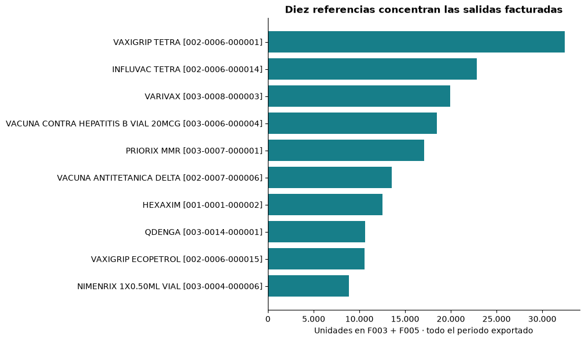
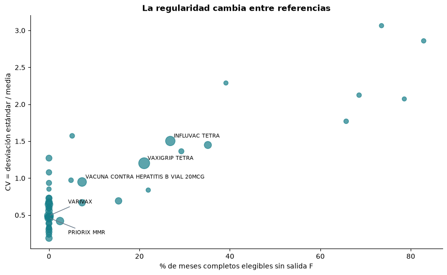
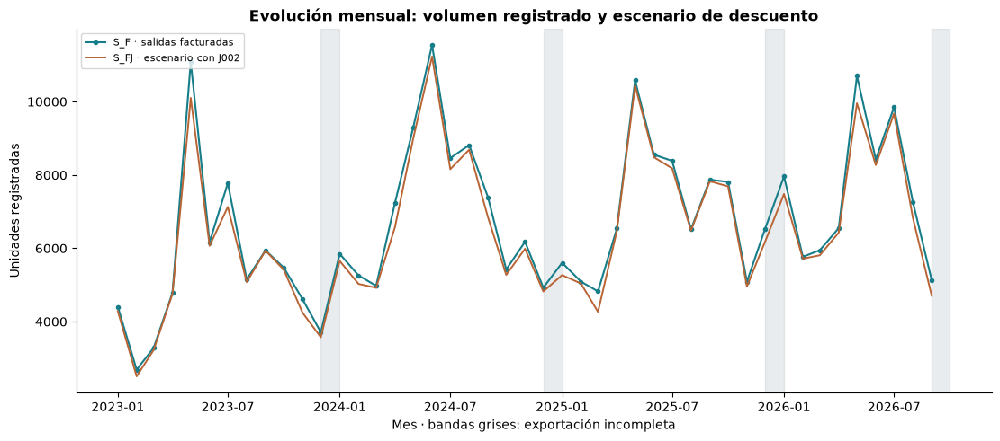
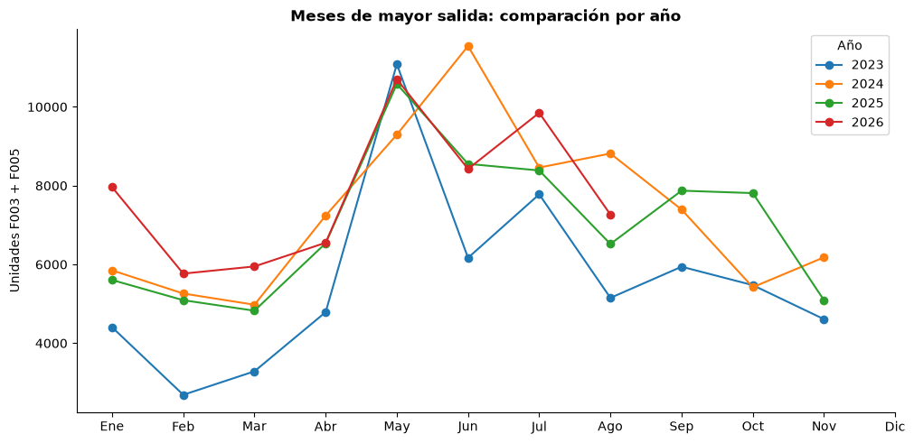
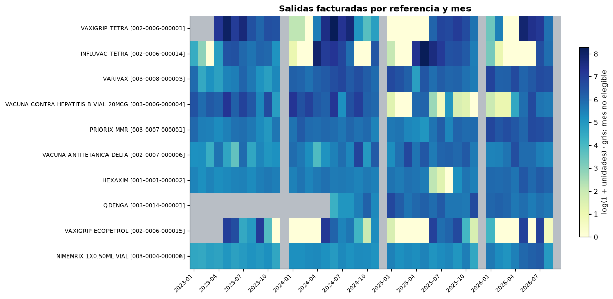
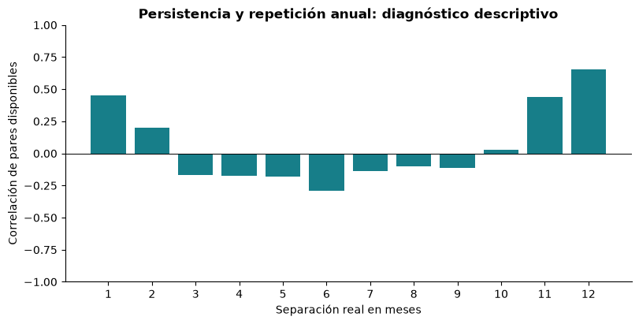
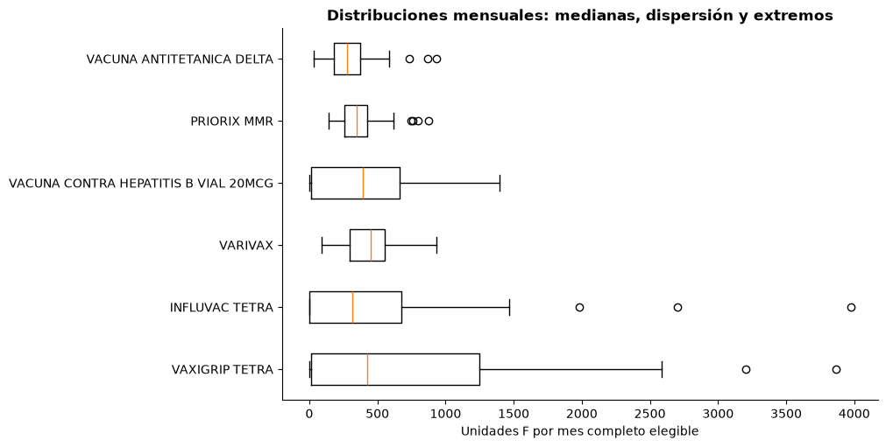

Seminario Investigativo
Análisis exploratorio de inventario
Infectólogos y Asociados LTDA · Construcción, validación y exploración de los movimientos de inventario de vacunas, 2023–2026
¿Cómo decidir cuánto comprar de una vacuna si una salida del inventario no necesariamente significa que esa vacuna fue consumida?
La empresa necesita decidir cuánto y cuándo comprar cada vacuna, y el registro histórico del que dispone es el movimiento contable de su inventario. Ese registro dice qué unidades salieron, pero no por qué salieron. Antes de estimar cualquier nivel de stock hay que establecer qué parte de esas salidas refleja el uso real de las vacunas. Este documento reconstruye los datos con ese propósito y muestra hasta dónde permiten avanzar.
Lectura ejecutiva
Problema. Infectólogos y Asociados LTDA debe equilibrar dos riesgos: no disponer de una vacuna cuando se necesita y mantener existencias que terminen venciéndose. El proyecto busca apoyar decisiones de stock por vacuna (stock de seguridad, mínimos y máximos, puntos de reorden). Este análisis es la etapa previa: no pronostica ni calcula políticas de compra.
Datos. Cuatro exportaciones del informe de movimientos de inventario de Siigo: 2023, 2024, 2025 y enero–septiembre de 2026. Diciembre de 2023, 2024 y 2025 y septiembre de 2026 terminan antes de fin de mes; se tratan como periodos incompletos y no se imputan.
Qué se hizo. De las 188.078 filas exportadas, solo 119.214 son movimientos de inventario; el resto son filas de lote (68.733), subtotales (130) y un registro de relleno (1). Con los movimientos se construyó una base analítica de 48 productos y 50 variables, trazable hasta la fila exacta del Excel, que superó los 22 controles de validación. Sobre esa base se describieron los tipos de documento, la concentración por producto y la evolución mensual: diez referencias reúnen el 55,35 % de las salidas facturadas, la regularidad cambia mucho de una vacuna a otra y hay una señal descriptiva de repetición anual.
Hallazgo metodológico principal. Las salidas del inventario no son una medida directa de consumo. De 341.852 unidades de salida, 301.429 están registradas en facturas (F003 y F005); las demás provienen de otros documentos, sobre todo T001, cuyo patrón es compatible con traslados entre bodegas. Contar todas las salidas sobrestimaría el volumen facturado en 13,41 %. Además, una factura no equivale por sí sola a una vacuna aplicada, y el informe no registra las solicitudes que no pudieron atenderse.
Qué falta. Definir con la empresa la variable respuesta: qué documentos representan uso efectivo de vacunas, cómo descontar devoluciones y traslados y cómo tratar los meses incompletos. Solo sobre esa definición tiene sentido modelar la demanda.
Cómo leer este documento
El texto distingue entre lo que aparece en los archivos (dato observado), lo que se calcula a partir de ellos (resultado), la lectura de esos resultados (interpretación), las explicaciones posibles aún no verificadas (hipótesis) y lo que debe confirmar la empresa. Las hipótesis y los puntos pendientes se señalan de forma explícita donde aparecen.
La columna DESCRIPCION contiene nombres de terceros, incluidas personas naturales. No se muestra en ningún
momento.
Las celdas de código ejecutan y verifican cada paso. Los detalles de ejecución (intérprete, archivos intermedios, huellas SHA-256) se reúnen en el anexo final.
| Parte | Secciones |
|---|---|
| I. Problema y datos | 0. Contexto y objetivo · 1. Fuente de datos |
| II. Construcción y validación de la base analítica (Fase 1) | 2. Carga · 3. Clasificación de filas · 4. Base de movimientos · 5. Variables derivadas · 6. Variables de control · 7. Validación final · 8. Base analítica final · 9. Síntesis |
| III. Exploración de los movimientos | 10. De las salidas registradas a una medida observable · 11. Documentos y medidas · 12. Productos · 13. Evolución temporal · 14. Contrastes entre años · 15. Saldos, bodegas y valores · 16. Verificación de los agregados |
| IV. Cierre | 17. Conclusiones: hacia la variable respuesta · Anexo técnico |
Parte I · El problema y los datos
0. Contexto y objetivo
Infectólogos y Asociados LTDA administra un inventario de vacunas expuesto a dos riesgos opuestos: el faltante, cuando no se dispone de una vacuna en el momento en que se requiere, y el exceso, cuando se mantienen más unidades de las necesarias y aumenta la probabilidad de vencimiento.
El proyecto busca usar el histórico de movimientos para apoyar, en etapas posteriores, la estimación de:
- consumo o demanda por vacuna y periodo;
- riesgo de desabastecimiento;
- riesgo de exceso de inventario y de vencimiento;
- stock de seguridad;
- niveles mínimos y máximos;
- puntos de reorden;
- cantidades sugeridas de compra.
El análisis exploratorio es el paso previo a esas estimaciones y no las realiza. Su propósito es caracterizar la estructura, la calidad y el comportamiento de los datos, e identificar las variables y los patrones que servirán después para modelar la demanda y la gestión del stock.
Una precaución orienta todo el documento. Una salida registrada puede corresponder a la aplicación de una vacuna, pero también a un traslado entre bodegas, un ajuste o una reversión. Por eso las salidas no se denominan «demanda real» mientras la empresa no valide qué representan. Separar esos casos es condición para construir la variable respuesta.
Soporte técnico. La celda siguiente carga las librerías, ubica las rutas del proyecto y fija los valores
de referencia contra los que se valida cada paso: número de filas, totales anuales de entradas y salidas y
meses incompletos. La función exigir presenta cada grupo de controles en una tabla y detiene la ejecución
si alguno falla.
Ver código
# Configuración técnica del notebook
import hashlib
import sys
from pathlib import Path
import numpy as np
import pandas as pd
import pyarrow
from IPython.display import display
pd.set_option("display.max_columns", 60)
pd.set_option("display.width", 200)
pd.set_option("display.max_colwidth", 60)
# Raíz del proyecto: la primera carpeta (actual o superior) que contiene INVENTARIO/ y analisis/.
# Así el notebook funciona tanto si se ejecuta desde analisis/ (por defecto en VS Code) como desde la raíz.
BASE = next(p for p in (Path.cwd(), *Path.cwd().parents)
if (p / "INVENTARIO").is_dir() and (p / "analisis").is_dir())
CARPETA_DATOS = BASE / "INVENTARIO"
CACHE = BASE / "analisis" / "cache"
# Artefactos aprobados (solo lectura)
CRUDO = {a: CACHE / f"crudo_{a}.pkl" for a in ["2023", "2024", "2025", "2026"]}
CLASIFICADO = CACHE / "clasificado_todos.pkl"
MOVIMIENTOS = CACHE / "df_movimientos.pkl"
DERIVADAS = CACHE / "df_movimientos_derivadas.pkl"
# Salidas de este notebook
SALIDA_PKL = CACHE / "df_inventario_analitico.pkl"
SALIDA_PARQUET = CACHE / "df_inventario_analitico.parquet"
# Fuente: archivos de Siigo y rango declarado en su encabezado (sección 1)
ARCHIVOS = pd.DataFrame({
"archivo": ["MOVIMIENTO 2023.xlsx", "MOVIMIENTO 2024.xlsx",
"MOVIMIENTO 2025.xlsx", "MOVIMIENTO A SEP 2026.xlsx"],
"anio_archivo": ["2023", "2024", "2025", "2026"],
"inicio_declarado": pd.to_datetime(["2023-01-01", "2024-01-01", "2025-01-01", "2026-01-01"]),
"fin_declarado": pd.to_datetime(["2023-12-23", "2024-12-21", "2025-12-20", "2026-09-17"]),
})
# Controles de referencia de la etapa estructural (secciones 1 a 7)
CONTROL_FILAS_REPORTE = 188_078
CONTROL_TIPOS = {"movimiento": 119_214, "lote_auxiliar": 68_733, "subtotal_total": 130, "placeholder": 1}
CONTROL_MOVIMIENTOS = 119_214
CONTROL_POR_ANIO = {"2023": 29_065, "2024": 31_217, "2025": 33_442, "2026": 25_490}
CONTROL_TOTALES = {"2023": (72_868, 72_577), "2024": (95_787, 96_329), # (ENTRADAS, SALIDAS)
"2025": (95_193, 94_772), "2026": (79_325, 78_174)}
MESES_INCOMPLETOS = ["2023-12", "2024-12", "2025-12", "2026-09"]
# Patrones verificados en el Paso 4
RE_PRODUCTO = r"^(\d{3}-\d{4}-\d{6}) (.+)$"
RE_DOCUMENTO = r"^([A-Z]\d{3})-(\d{9})-(\d{3})$"
# Tolerancia monetaria de la sección 6: un centavo de peso
TOL_VALOR = 0.01
def sha256(ruta):
"""Huella SHA-256 de un archivo, leída en bloques (no modifica el archivo)."""
h = hashlib.sha256()
with open(ruta, "rb") as f:
for bloque in iter(lambda: f.read(1 << 20), b""):
h.update(bloque)
return h.hexdigest()
def control(nombre, esperado, obtenido, ok=None):
"""Una fila de la tabla de controles. Por defecto es OK si esperado == obtenido."""
ok = (esperado == obtenido) if ok is None else ok
return {"control": nombre, "esperado": esperado, "obtenido": obtenido,
"estado": "OK" if bool(ok) else "FALLA"}
def exigir(controles, contexto):
"""Muestra la tabla de controles y detiene la ejecución si alguno falla."""
tabla = pd.DataFrame(controles)
tabla.index = range(1, len(tabla) + 1)
display(tabla)
fallas = tabla.loc[tabla["estado"] != "OK", "control"].tolist()
if fallas:
raise RuntimeError(f"{contexto}: fallaron {len(fallas)} control(es): {fallas}. "
"Se detiene la ejecución; no se continúa ni se guarda nada.")
print(f"{contexto}: {len(tabla)} de {len(tabla)} controles OK.")
print(f"Python {sys.version.split()[0]} | pandas {pd.__version__} | numpy {np.__version__} "
f"| pyarrow {pyarrow.__version__}")
print(f"Intérprete: {sys.executable}")
print(f"Raíz del proyecto: {BASE}")
Python 3.13.11 | pandas 3.0.2 | numpy 2.4.4 | pyarrow 24.0.0 Intérprete: (intérprete local del proyecto) Raíz del proyecto: (raíz del proyecto)
1. Fuente de datos
La información proviene de cuatro exportaciones del informe «Movimiento total de inventario» del software contable Siigo, generadas el 17 de septiembre de 2026. Los archivos originales se abren solo en lectura y no se modifican.
| Archivo | Rango declarado en el informe |
|---|---|
MOVIMIENTO 2023.xlsx |
1 ene 2023 – 23 dic 2023 |
MOVIMIENTO 2024.xlsx |
1 ene 2024 – 21 dic 2024 |
MOVIMIENTO 2025.xlsx |
1 ene 2025 – 20 dic 2025 |
MOVIMIENTO A SEP 2026.xlsx |
1 ene 2026 – 17 sep 2026 |
Cada archivo tiene una sola hoja (Informe), un preámbulo de seis filas y el encabezado real en la fila 7.
Las 32 columnas siguen el mismo esquema en los cuatro archivos; la única diferencia de contenido es que el de
2026 no incluye subtotales ni «Total general». Los archivos no contienen solo movimientos: cada movimiento
puede ir seguido de filas auxiliares con información de lote, y el informe intercala subtotales por
producto (sección 3).
Periodos incompletos. Los rangos exportados terminan antes de fin de mes en diciembre de 2023, diciembre de 2024, diciembre de 2025 y septiembre de 2026. Esos cuatro meses no se tratan como completos ni se imputan.
La celda siguiente no transforma datos: verifica que los archivos existan y registra su huella SHA-256, que se recalcula en la sección 8 para comprobar que no cambiaron.
Ver código
# Inventario de los archivos fuente: existencia, tamaño y huella SHA-256.
# Lectura binaria: los .xlsx no se abren como libro ni se modifican.
fuentes = ARCHIVOS.copy()
fuentes["existe"] = [(CARPETA_DATOS / a).is_file() for a in fuentes["archivo"]]
fuentes["tamaño_MB"] = [round((CARPETA_DATOS / a).stat().st_size / 1e6, 2) for a in fuentes["archivo"]]
HUELLAS_XLSX = {a: sha256(CARPETA_DATOS / a) for a in fuentes["archivo"]}
fuentes["sha256 (inicio)"] = [HUELLAS_XLSX[a][:16] for a in fuentes["archivo"]]
fuentes["inicio_declarado"] = fuentes["inicio_declarado"].dt.date
fuentes["fin_declarado"] = fuentes["fin_declarado"].dt.date
display(fuentes)
exigir([control("Archivos fuente presentes", 4, int(fuentes["existe"].sum()))], "Sección 1")
| archivo | anio_archivo | inicio_declarado | fin_declarado | existe | tamaño_MB | sha256 (inicio) | |
|---|---|---|---|---|---|---|---|
| 0 | MOVIMIENTO 2023.xlsx | 2023 | 2023-01-01 | 2023-12-23 | True | 6.61 | 3ee1703af199ee6b |
| 1 | MOVIMIENTO 2024.xlsx | 2024 | 2024-01-01 | 2024-12-21 | True | 7.13 | 0fd9a6fc28608ae6 |
| 2 | MOVIMIENTO 2025.xlsx | 2025 | 2025-01-01 | 2025-12-20 | True | 7.65 | 7b8db733dae6a756 |
| 3 | MOVIMIENTO A SEP 2026.xlsx | 2026 | 2026-01-01 | 2026-09-17 | True | 5.90 | 0670e60bb06f4e95 |
| control | esperado | obtenido | estado | |
|---|---|---|---|---|
| 1 | Archivos fuente presentes | 4 | 4 | OK |
Sección 1: 1 de 1 controles OK.
Alcance de la fuente.
- Las exportaciones reflejan el estado de Siigo al 17 de septiembre de 2026. Los documentos contabilizados después de esa fecha, aunque tengan fecha anterior, no están incluidos. Este punto debe confirmarse con la empresa.
- El informe es una vista contable: registra lo que se movió, no las solicitudes que no pudieron atenderse. Con esta fuente la demanda insatisfecha no es observable.
Parte II · Construcción y validación de la base analítica (Fase 1)
Un informe contable diseñado para leerse en pantalla no es todavía una tabla de datos. Esta parte explica cómo se pasó de las filas exportadas a una base de movimientos y cómo se comprobó que la transformación no alteró la información original.
2. Carga y estructura original (Paso 1)
El primer paso consistió en leer los cuatro archivos completos, conservando su estructura y la ubicación de cada fila en el Excel:
- el encabezado se detectó programáticamente, sin suponer su posición;
- las columnas se leyeron sin inferencia de tipos (
dtype=object), para que pandas no alterara los valores antes del análisis;FECHAse conservó como fecha; - se eliminaron los espacios sobrantes al inicio y al final de encabezados y valores, sin tocar los internos;
- se añadieron tres columnas de trazabilidad:
archivo_origen,anio_archivoyfila_excel(número de fila tal como lo muestra Excel).
La carga se ejecuta en un script independiente (véase el anexo técnico). La celda siguiente parte de su resultado y verifica dimensiones, esquema y continuidad de las filas.
Ver código
# Caches aprobados del Paso 1: dimensiones, esquema y continuidad de fila_excel (no se releen los Excel)
COLUMNAS_ORIGINALES = [
"PRODUCTO", "LINEA", "GRUPO", "LIN", "GRU", "ELEM", "NOMBRE ELEMENTO",
"REFERENCIA", "UNIDAD", "MARCA", "DESCRIPCION", "DOCUMENTO", "FECHA",
"BODEGA", "UBICACION", "UNITARIO", "CANT. ANTERIOR", "VALOR ANTERIOR",
"ENTRADAS", "ENTRADAS CLAS.", "VALOR ENTRADAS", "SALIDAS", "SALIDAS CLAS.",
"VALOR SALIDAS", "CANTIDAD", "ACUM CANTIDAD", "VALOR", "ACUM VALOR",
"ENTRADA CAN2", "SALIDA CAN2", "CANTIDAD2", "ACUM CANTIDAD2",
]
TRAZABILIDAD = ["archivo_origen", "anio_archivo", "fila_excel"]
filas = []
for anio, ruta in CRUDO.items():
crudo = pd.read_pickle(ruta)
datos = [c for c in crudo.columns if c not in TRAZABILIDAD]
fe = crudo["fila_excel"]
filas.append({
"anio_archivo": anio,
"archivo_origen": crudo["archivo_origen"].iloc[0],
"filas": len(crudo),
"columnas_originales": len(datos),
"mismo_esquema_y_orden": datos == COLUMNAS_ORIGINALES,
"fila_excel_desde": int(fe.min()),
"fila_excel_hasta": int(fe.max()),
"fila_excel_unica_y_continua": bool(fe.is_unique and fe.max() - fe.min() + 1 == len(crudo)),
})
del crudo
estructura = pd.DataFrame(filas)
display(estructura)
print("Columnas originales (32):", ", ".join(COLUMNAS_ORIGINALES))
exigir([
control("Filas posteriores al encabezado (4 archivos)", CONTROL_FILAS_REPORTE, int(estructura["filas"].sum())),
control("Archivos con las 32 columnas originales, en el mismo orden", 4,
int(estructura["mismo_esquema_y_orden"].sum())),
control("Archivos con fila_excel única y continua", 4, int(estructura["fila_excel_unica_y_continua"].sum())),
], "Sección 2")
| anio_archivo | archivo_origen | filas | columnas_originales | mismo_esquema_y_orden | fila_excel_desde | fila_excel_hasta | fila_excel_unica_y_continua | |
|---|---|---|---|---|---|---|---|---|
| 0 | 2023 | MOVIMIENTO 2023.xlsx | 45616 | 32 | True | 8 | 45623 | True |
| 1 | 2024 | MOVIMIENTO 2024.xlsx | 49119 | 32 | True | 8 | 49126 | True |
| 2 | 2025 | MOVIMIENTO 2025.xlsx | 52531 | 32 | True | 8 | 52538 | True |
| 3 | 2026 | MOVIMIENTO A SEP 2026.xlsx | 40812 | 32 | True | 8 | 40819 | True |
Columnas originales (32): PRODUCTO, LINEA, GRUPO, LIN, GRU, ELEM, NOMBRE ELEMENTO, REFERENCIA, UNIDAD, MARCA, DESCRIPCION, DOCUMENTO, FECHA, BODEGA, UBICACION, UNITARIO, CANT. ANTERIOR, VALOR ANTERIOR, ENTRADAS, ENTRADAS CLAS., VALOR ENTRADAS, SALIDAS, SALIDAS CLAS., VALOR SALIDAS, CANTIDAD, ACUM CANTIDAD, VALOR, ACUM VALOR, ENTRADA CAN2, SALIDA CAN2, CANTIDAD2, ACUM CANTIDAD2
| control | esperado | obtenido | estado | |
|---|---|---|---|---|
| 1 | Filas posteriores al encabezado (4 archivos) | 188078 | 188078 | OK |
| 2 | Archivos con las 32 columnas originales, en el mismo orden | 4 | 4 | OK |
| 3 | Archivos con fila_excel única y continua | 4 | 4 | OK |
Sección 2: 3 de 3 controles OK.
Las 188.078 filas del informe quedan disponibles con su esquema original y con la ubicación exacta de cada una en el Excel. Todavía no se sabe cuáles son movimientos; eso se resuelve en la sección siguiente.
3. Clasificación de filas (Paso 2)
¿Qué filas del informe son movimientos de inventario y cuáles son información auxiliar del reporte?
El informe de Siigo está pensado para lectura humana, no como tabla de datos. Dentro de cada producto se repite esta secuencia:
- una fila de movimiento, con
FECHAyDOCUMENTO; - inmediatamente después, una o más filas auxiliares de lote, sin fecha ni documento, con el lote en
REFERENCIAy las unidades por lote enENTRADAS CLAS./SALIDAS CLAS.; - al cierre de cada producto, una fila de subtotal («Total …») y, al final del archivo, un «Total general» (excepto en 2026);
- además, un único registro de relleno (placeholder) en 2023, cuyo
DOCUMENTOcontiene solo guiones.
Si todas las filas se trataran como movimientos, las unidades se contarían dos veces y los totales se mezclarían con las transacciones.
Se añadió una sola columna, tipo_fila, sin eliminar ninguna fila. Como las reglas se solapan (las 130 filas
de subtotal también cumplirían la regla de lote), se aplican en orden, de la más específica a la más general:
| Orden | Categoría | Regla |
|---|---|---|
| 1 | subtotal_total |
PRODUCTO empieza por «Total» |
| 2 | placeholder |
DOCUMENTO compuesto solo por guiones y espacios |
| 3 | movimiento |
FECHA válida y DOCUMENTO diligenciado |
| 4 | lote_auxiliar |
sin FECHA, sin DOCUMENTO, con ENTRADAS CLAS. o SALIDAS CLAS. |
| — | sin_clasificar |
red de seguridad: debe quedar en cero |
Ver código
# Resultado aprobado del Paso 2, leído de su cache: filas por archivo y tipo
clasificado = pd.read_pickle(CLASIFICADO)
TIPOS = ["movimiento", "lote_auxiliar", "subtotal_total", "placeholder", "sin_clasificar"]
tabla_tipos = (pd.crosstab(clasificado["anio_archivo"], clasificado["tipo_fila"].astype(str))
.reindex(columns=TIPOS, fill_value=0))
tabla_tipos["TOTAL"] = tabla_tipos.sum(axis=1)
tabla_tipos.loc["TOTAL"] = tabla_tipos.sum()
tabla_tipos["% movimientos"] = (tabla_tipos["movimiento"] / tabla_tipos["TOTAL"] * 100).round(1)
display(tabla_tipos)
conteos = clasificado["tipo_fila"].astype(str).value_counts()
exigir([control(f"Filas «{t}»", n, int(conteos.get(t, 0))) for t, n in CONTROL_TIPOS.items()]
+ [control("Filas «sin_clasificar»", 0, int(conteos.get("sin_clasificar", 0))),
control("Total de filas", CONTROL_FILAS_REPORTE, len(clasificado))], "Sección 3")
| tipo_fila | movimiento | lote_auxiliar | subtotal_total | placeholder | sin_clasificar | TOTAL | % movimientos |
|---|---|---|---|---|---|---|---|
| anio_archivo | |||||||
| 2023 | 29065 | 16509 | 41 | 1 | 0 | 45616 | 63.7 |
| 2024 | 31217 | 17856 | 46 | 0 | 0 | 49119 | 63.6 |
| 2025 | 33442 | 19046 | 43 | 0 | 0 | 52531 | 63.7 |
| 2026 | 25490 | 15322 | 0 | 0 | 0 | 40812 | 62.5 |
| TOTAL | 119214 | 68733 | 130 | 1 | 0 | 188078 | 63.4 |
| control | esperado | obtenido | estado | |
|---|---|---|---|---|
| 1 | Filas «movimiento» | 119214 | 119214 | OK |
| 2 | Filas «lote_auxiliar» | 68733 | 68733 | OK |
| 3 | Filas «subtotal_total» | 130 | 130 | OK |
| 4 | Filas «placeholder» | 1 | 1 | OK |
| 5 | Filas «sin_clasificar» | 0 | 0 | OK |
| 6 | Total de filas | 188078 | 188078 | OK |
Sección 3: 6 de 6 controles OK.
Para ilustrar la estructura se muestran las primeras filas del informe de 2023, dos subtotales y el registro
de relleno (sin DESCRIPCION).
Ver código
# Primeras filas del informe 2023: cada movimiento va seguido de su fila de lote (sin DESCRIPCION)
COLS_ILUSTRACION = ["fila_excel", "tipo_fila", "PRODUCTO", "REFERENCIA", "DOCUMENTO", "FECHA",
"ENTRADAS", "SALIDAS", "ENTRADAS CLAS.", "SALIDAS CLAS."]
es_2023 = clasificado["archivo_origen"] == "MOVIMIENTO 2023.xlsx"
display(clasificado.loc[es_2023 & clasificado["fila_excel"].between(8, 15), COLS_ILUSTRACION])
# Filas que no son movimiento ni lote: dos subtotales y el placeholder
otras = clasificado.loc[clasificado["tipo_fila"].isin(["subtotal_total", "placeholder"]),
["archivo_origen", "fila_excel", "tipo_fila", "PRODUCTO", "DOCUMENTO"]]
display(otras.groupby(otras["tipo_fila"].astype(str)).head(2))
| fila_excel | tipo_fila | PRODUCTO | REFERENCIA | DOCUMENTO | FECHA | ENTRADAS | SALIDAS | ENTRADAS CLAS. | SALIDAS CLAS. | |
|---|---|---|---|---|---|---|---|---|---|---|
| 0 | 8 | movimiento | 003-0002-000002 ADACEL | TC70833 | F003-000012345-020 | 2023-01-10 00:00:00 | 0 | 1 | <NA> | <NA> |
| 1 | 9 | lote_auxiliar | 003-0002-000002 ADACEL | C5884CD ADACEL | <NA> | <NA> | <NA> | <NA> | 0 | 1 |
| 2 | 10 | movimiento | 003-0002-000002 ADACEL | TC70833 | F003-000012355-020 | 2023-01-10 00:00:00 | 0 | 1 | <NA> | <NA> |
| 3 | 11 | lote_auxiliar | 003-0002-000002 ADACEL | C5884CD ADACEL | <NA> | <NA> | <NA> | <NA> | 0 | 1 |
| 4 | 12 | movimiento | 003-0002-000002 ADACEL | TC70833 | J002-000000316-020 | 2023-01-10 00:00:00 | 1 | 0 | <NA> | <NA> |
| 5 | 13 | lote_auxiliar | 003-0002-000002 ADACEL | C5884CD ADACEL | <NA> | <NA> | <NA> | <NA> | 1 | 0 |
| 6 | 14 | movimiento | 003-0002-000002 ADACEL | TC70833 | F003-000012363-009 | 2023-01-10 00:00:00 | 0 | 1 | <NA> | <NA> |
| 7 | 15 | lote_auxiliar | 003-0002-000002 ADACEL | C5884CD ADACEL | <NA> | <NA> | <NA> | <NA> | 0 | 1 |
| archivo_origen | fila_excel | tipo_fila | PRODUCTO | DOCUMENTO | |
|---|---|---|---|---|---|
| 847 | MOVIMIENTO 2023.xlsx | 855 | subtotal_total | Total 003-0002-000002 ADACEL | <NA> |
| 1368 | MOVIMIENTO 2023.xlsx | 1376 | subtotal_total | Total 002-0004-000001 AVAXIM 160 | <NA> |
| 3782 | MOVIMIENTO 2023.xlsx | 3790 | placeholder | 003-0006-000002 ENGERIX B20 | - - |
En las filas de movimiento, DESCRIPCION contiene nombres de terceros; en las filas de lote contiene un
número entero. La celda siguiente comprueba si ese entero tiene forma de fecha AAAAMMDD, mostrando solo
conteos y el rango, nunca valores individuales.
Ver código
# Filas de lote: ¿el entero de DESCRIPCION tiene forma de fecha AAAAMMDD?
lote = clasificado.loc[clasificado["tipo_fila"] == "lote_auxiliar", "DESCRIPCION"]
es_entero = lote.map(lambda v: isinstance(v, (int, np.integer)))
texto = lote[es_entero].astype("int64").astype("string")
como_fecha = pd.to_datetime(texto, format="%Y%m%d", errors="coerce")
resumen_lote = pd.Series({
"filas de lote": len(lote),
"DESCRIPCION entera": int(es_entero.sum()),
"entero de 8 dígitos": int((texto.str.len() == 8).sum()),
"interpretable como fecha AAAAMMDD": int(como_fecha.notna().sum()),
"fecha mínima": como_fecha.min().date(),
"fecha máxima": como_fecha.max().date(),
}, name="resultado").to_frame()
del clasificado, lote, texto, como_fecha
resumen_lote
| resultado | |
|---|---|
| filas de lote | 68733 |
| DESCRIPCION entera | 68733 |
| entero de 8 dígitos | 68705 |
| interpretable como fecha AAAAMMDD | 68705 |
| fecha mínima | 2020-07-30 |
| fecha máxima | 2029-12-31 |
Resultado. Todas las filas quedaron clasificadas: 119.214 movimientos, 68.733 filas de lote, 130 subtotales o totales y un registro de relleno. La proporción de movimientos es estable entre años (62,5 %–63,7 %).
Las filas de movimiento son la unidad de análisis de lo que sigue. Las filas de lote no se descartan, porque
contienen la información necesaria para un análisis posterior de vencimientos: en 68.705 de las 68.733,
DESCRIPCION es un entero de ocho dígitos interpretable como fecha, entre 2020 y 2029. Que ese entero sea la
fecha de vencimiento del lote es una hipótesis que debe confirmar la empresa.
Limitación. La relación entre un movimiento y sus filas de lote es posicional: son las filas que lo
siguen en el Excel. Puede reconstruirse con archivo_origen + fila_excel, pero todavía no se ha incorporado
a la base de movimientos.
4. Base de movimientos (Paso 3)
Con la clasificación anterior se construyó la tabla que contiene exclusivamente los movimientos de inventario:
- se seleccionaron las filas con
tipo_fila == "movimiento"y 30 columnas (4 de trazabilidad y control y 26 de datos), sin depurar redundancias; - se excluyeron seis columnas del reporte tras verificar que no tienen información en los movimientos:
ENTRADAS CLAS.ySALIDAS CLAS.(100 % vacías) y las cuatro columnasCAN2(100 % en cero); - los tipos se convirtieron comprobando que ningún valor cambiara:
FECHAa fecha, cantidades a entero, valores monetarios a decimal (los vacíos se conservan como vacíos) e identificadores a texto, para no perder ceros a la izquierda.
Unidad de análisis. Cada fila es una línea de movimiento de inventario: un producto, en una bodega, registrado por un documento en una fecha. La definición importa porque una fila no equivale a ninguno de los conceptos con los que suele confundirse:
| Concepto | ¿Equivale a una fila? |
|---|---|
| Comprobante completo | No necesariamente: un comprobante puede tener varias líneas. |
| Compra | No: las entradas incluyen también traslados, reversiones y ajustes. |
| Venta | No: las salidas incluyen también traslados y ajustes. |
| Consumo | No: un traslado genera una salida sin aplicación de vacuna. |
| Demanda | No: el informe registra lo que se movió, no lo que se solicitó y no se atendió. |
La celda siguiente carga esta base junto con las variables derivadas del Paso 4 (sección 5) y muestra un resumen.
Ver código
# Punto de partida operativo: base de movimientos con variables derivadas (Pasos 3 y 4, aprobados)
HUELLA_MOVIMIENTOS = sha256(MOVIMIENTOS) # para comprobar en la sección 8 que no cambiaron
HUELLA_DERIVADAS = sha256(DERIVADAS)
df = pd.read_pickle(DERIVADAS)
COLUMNAS_PASO3 = [
"archivo_origen", "anio_archivo", "fila_excel", "tipo_fila",
"PRODUCTO", "LINEA", "GRUPO", "LIN", "GRU", "ELEM", "NOMBRE ELEMENTO", "REFERENCIA", "UNIDAD",
"MARCA", "DESCRIPCION", "DOCUMENTO", "FECHA", "BODEGA", "UBICACION",
"UNITARIO", "CANT. ANTERIOR", "VALOR ANTERIOR", "ENTRADAS", "VALOR ENTRADAS", "SALIDAS",
"VALOR SALIDAS", "CANTIDAD", "ACUM CANTIDAD", "VALOR", "ACUM VALOR",
]
VARIABLES_DERIVADAS = ["cod_producto", "nombre_producto", "doc_prefijo", "doc_numero", "doc_linea",
"doc_base", "anio", "mes", "anio_mes", "trimestre", "dia_semana", "mes_completo"]
display(pd.Series({
"movimientos (filas)": len(df),
"variables": df.shape[1],
" originales (Paso 3)": len(COLUMNAS_PASO3),
" derivadas (Paso 4)": len(VARIABLES_DERIVADAS),
"FECHA mínima": df["FECHA"].min().date(),
"FECHA máxima": df["FECHA"].max().date(),
"productos distintos (cod_producto)": df["cod_producto"].nunique(),
}, name="valor").to_frame())
por_anio = df.groupby("anio_archivo").size().rename("movimientos").to_frame()
por_anio["% del total"] = (por_anio["movimientos"] / len(df) * 100).round(1)
display(por_anio)
exigir([
control("Columnas: 30 originales + 12 derivadas, en orden", True,
list(df.columns) == COLUMNAS_PASO3 + VARIABLES_DERIVADAS),
control("Movimientos", CONTROL_MOVIMIENTOS, len(df)),
*[control(f"Movimientos {a}", n, int(por_anio.loc[a, "movimientos"])) for a, n in CONTROL_POR_ANIO.items()],
], "Sección 4")
| valor | |
|---|---|
| movimientos (filas) | 119214 |
| variables | 42 |
| originales (Paso 3) | 30 |
| derivadas (Paso 4) | 12 |
| FECHA mínima | 2023-01-10 |
| FECHA máxima | 2026-09-17 |
| productos distintos (cod_producto) | 48 |
| movimientos | % del total | |
|---|---|---|
| anio_archivo | ||
| 2023 | 29065 | 24.4 |
| 2024 | 31217 | 26.2 |
| 2025 | 33442 | 28.1 |
| 2026 | 25490 | 21.4 |
| control | esperado | obtenido | estado | |
|---|---|---|---|---|
| 1 | Columnas: 30 originales + 12 derivadas, en orden | True | True | OK |
| 2 | Movimientos | 119214 | 119214 | OK |
| 3 | Movimientos 2023 | 29065 | 29065 | OK |
| 4 | Movimientos 2024 | 31217 | 31217 | OK |
| 5 | Movimientos 2025 | 33442 | 33442 | OK |
| 6 | Movimientos 2026 | 25490 | 25490 | OK |
Sección 4: 6 de 6 controles OK.
La base cubre del 10 de enero de 2023 al 17 de septiembre de 2026 e incluye 48 productos. El primer movimiento de cada año aparece entre el 5 y el 10 de enero; esa fecha no implica que no hubiera necesidades en los días anteriores.
Tres rasgos del informe condicionan la lectura de las cantidades:
ACUM CANTIDADes el saldo acumulado consolidado por producto (todas las bodegas), no por bodega;CANT. ANTERIORes el saldo inicial del año, no el saldo previo a cada movimiento;UNIDADmezclaUND,UN,1y vacíos, y no se homogeneizó.
5. Variables derivadas (Paso 4)
Para analizar el comportamiento por vacuna, por tipo de documento y en el tiempo se derivaron 12 variables a
partir de los campos originales, sin modificarlos. Antes se verificó el patrón en el 100 % de las filas:
PRODUCTO = 999-9999-999999 + espacio + nombre, y DOCUMENTO = A999-999999999-999. Después se comprobó
que PRODUCTO y DOCUMENTO se reconstruyen exactamente a partir de sus partes.
| Grupo | Variables | Origen | Uso previsto |
|---|---|---|---|
| Producto | cod_producto, nombre_producto |
PRODUCTO |
Identificar cada vacuna con un código estable y una etiqueta legible; unidad de agregación de la futura serie por vacuna. |
| Documento | doc_prefijo, doc_numero, doc_linea, doc_base |
DOCUMENTO |
Separar los movimientos por tipo estructural de documento y agrupar las líneas de un mismo comprobante. |
| Temporalidad | anio, mes, anio_mes, trimestre, dia_semana, mes_completo |
FECHA (y rango declarado del archivo, para mes_completo) |
Agregar por periodo y distinguir los meses comparables de los cortados por la exportación. |
doc_prefijoes una clasificación estructural; no se le asigna significado empresarial.- Que el tercer segmento del documento (
doc_linea) sea la línea del comprobante es una hipótesis. mes_completoindica que el rango exportado cubre el mes del día 1 al último, no que hubo actividad todos los días.dia_semanase construye con un diccionario explícito (lunes…domingo), independiente del idioma del sistema.
Ver código
# Las 12 variables derivadas, leídas del cache aprobado (no se recalculan)
GRUPOS = {"Producto": ["cod_producto", "nombre_producto"],
"Documento": ["doc_prefijo", "doc_numero", "doc_linea", "doc_base"],
"Temporalidad": ["anio", "mes", "anio_mes", "trimestre", "dia_semana", "mes_completo"]}
display(pd.DataFrame([{"grupo": g, "variable": v, "dtype": str(df[v].dtype),
"nulos": int(df[v].isna().sum()), "valores distintos": int(df[v].nunique())}
for g, vs in GRUPOS.items() for v in vs]))
# Ejemplos de la descomposición (sin DESCRIPCION)
display(df.drop_duplicates("cod_producto").sort_values("cod_producto").iloc[[0, 20, 40]]
[["PRODUCTO", "cod_producto", "nombre_producto", "LIN", "GRU", "ELEM"]])
display(df.drop_duplicates("doc_prefijo").head(3)
[["DOCUMENTO", "doc_prefijo", "doc_numero", "doc_linea", "doc_base"]])
| grupo | variable | dtype | nulos | valores distintos | |
|---|---|---|---|---|---|
| 0 | Producto | cod_producto | string | 0 | 48 |
| 1 | Producto | nombre_producto | string | 0 | 48 |
| 2 | Documento | doc_prefijo | string | 0 | 10 |
| 3 | Documento | doc_numero | string | 0 | 26146 |
| 4 | Documento | doc_linea | string | 0 | 274 |
| 5 | Documento | doc_base | string | 0 | 26430 |
| 6 | Temporalidad | anio | int64 | 0 | 4 |
| 7 | Temporalidad | mes | int64 | 0 | 12 |
| 8 | Temporalidad | anio_mes | period[M] | 0 | 45 |
| 9 | Temporalidad | trimestre | int64 | 0 | 4 |
| 10 | Temporalidad | dia_semana | category | 0 | 7 |
| 11 | Temporalidad | mes_completo | bool | 0 | 2 |
| PRODUCTO | cod_producto | nombre_producto | LIN | GRU | ELEM | |
|---|---|---|---|---|---|---|
| 7819 | 001-0001-000001 INFANRIX HEXA | 001-0001-000001 | INFANRIX HEXA | 1 | 1 | 000001 |
| 27499 | 002-0006-000015 VAXIGRIP ECOPETROL | 002-0006-000015 | VAXIGRIP ECOPETROL | 2 | 6 | 000015 |
| 65819 | 003-0006-000006 ELOVAC-B VACUNA HEPATITIS B | 003-0006-000006 | ELOVAC-B VACUNA HEPATITIS B | 3 | 6 | 000006 |
| DOCUMENTO | doc_prefijo | doc_numero | doc_linea | doc_base | |
|---|---|---|---|---|---|
| 0 | F003-000012345-020 | F003 | 000012345 | 020 | F003-000012345 |
| 2 | J002-000000316-020 | J002 | 000000316 | 020 | J002-000000316 |
| 8 | T001-000008496-002 | T001 | 000008496 | 002 | T001-000008496 |
Ver código
# Prefijos de documento: clasificación ESTRUCTURAL, sin significado empresarial
g = df.groupby("doc_prefijo")
prefijos = pd.DataFrame({
"filas": g.size(),
"% filas": (g.size() / len(df) * 100).round(2),
"comprobantes (doc_base)": g["doc_base"].nunique(),
"máx. filas por comprobante": df.groupby(["doc_prefijo", "doc_base"]).size().groupby(level=0).max(),
}).sort_values("filas", ascending=False)
display(prefijos)
por_base = df.groupby("doc_base")
print(f"Comprobantes distintos (doc_base): {por_base.ngroups:,} | "
f"presentes en más de un archivo: {int((por_base['archivo_origen'].nunique() > 1).sum())} | "
f"con más de una FECHA: {int((por_base['FECHA'].nunique() > 1).sum())}")
| filas | % filas | comprobantes (doc_base) | máx. filas por comprobante | |
|---|---|---|---|---|
| doc_prefijo | ||||
| F003 | 54363 | 45.60 | 20637 | 22 |
| L017 | 50596 | 42.44 | 226 | 250 |
| T001 | 8774 | 7.36 | 2258 | 22 |
| P001 | 3440 | 2.89 | 2685 | 5 |
| J002 | 1495 | 1.25 | 517 | 17 |
| F005 | 425 | 0.36 | 47 | 23 |
| L018 | 95 | 0.08 | 44 | 10 |
| P002 | 21 | 0.02 | 12 | 4 |
| C001 | 4 | 0.00 | 3 | 2 |
| D001 | 1 | 0.00 | 1 | 1 |
Comprobantes distintos (doc_base): 26,430 | presentes en más de un archivo: 0 | con más de una FECHA: 0
Ver código
# Meses completos e incompletos según el rango exportado
meses = df.groupby("anio_mes").agg(movimientos=("DOCUMENTO", "size"), mes_completo=("mes_completo", "first"))
display(meses.loc[~meses["mes_completo"]])
completos = meses.loc[meses["mes_completo"]]
print(f"Meses con movimientos: {len(meses)} | completos: {len(completos)} | "
f"incompletos: {int((~meses['mes_completo']).sum())}")
print(f"Mes completo con menos movimientos: {completos['movimientos'].idxmin()} "
f"({completos['movimientos'].min():,} movimientos)")
exigir([control("Meses incompletos", ", ".join(MESES_INCOMPLETOS),
", ".join(str(p) for p in meses.index[~meses["mes_completo"]]))], "Sección 5")
| movimientos | mes_completo | |
|---|---|---|
| anio_mes | ||
| 2023-12 | 1181 | False |
| 2024-12 | 1300 | False |
| 2025-12 | 1551 | False |
| 2026-09 | 1072 | False |
Meses con movimientos: 45 | completos: 41 | incompletos: 4 Mes completo con menos movimientos: 2026-08 (1,806 movimientos)
| control | esperado | obtenido | estado | |
|---|---|---|---|---|
| 1 | Meses incompletos | 2023-12, 2024-12, 2025-12, 2026-09 | 2023-12, 2024-12, 2025-12, 2026-09 | OK |
Sección 5: 1 de 1 controles OK.
Resultado. Hay 10 prefijos de documento, y F003 y L017 concentran el 88 % de las filas. Existen 26.430
comprobantes distintos (doc_base); ninguno aparece en más de un archivo ni con más de una fecha. Esto
respalda agrupar las líneas por comprobante, aunque no confirma que cada uno sea una operación empresarial
independiente. El periodo abarca 45 meses con movimientos: 41 completos y 4 incompletos.
Los prefijos muestran patrones de uso distintos. Salvo el de F, ninguno de estos significados ha sido confirmado por la empresa:
| Prefijo | Patrón observado en los datos |
|---|---|
| F003 | salidas; según la empresa, los documentos F son facturas |
| F005 | salidas, desde 2025; también documento F |
| P001 | entradas con costo unitario |
| J002 | entradas, frecuentemente asociadas a F003; posible reversión o devolución |
| T001 | entradas y salidas equivalentes entre bodegas; patrón compatible con traslado |
| L017 | mueve valor, pero no unidades |
| L018 | patrón compatible con ajustes |
| P002, C001, D001 | poco frecuentes; sin patrón descrito |
Pendiente de confirmación con la empresa.
- El significado de cada prefijo distinto de F.
- El máximo de 250 filas por comprobante, que solo aparece en L017: si fuera un límite de Siigo, una misma
operación podría repartirse en varios
doc_base. - Agosto de 2026 figura como completo según el rango exportado, pero es el mes completo con menos movimientos. Conviene confirmar que estaba totalmente contabilizado al exportar.
6. Variables de control (Paso 5)
¿Conserva la base la lógica matemática del inventario, y qué registros deben quedar señalados para los
análisis posteriores? Para responderlo se añadieron ocho variables de control, calculadas con ENTRADAS,
SALIDAS, CANTIDAD, VALOR ENTRADAS, VALOR SALIDAS, VALOR y ACUM CANTIDAD. Ningún registro se
corrige ni se elimina: solo se marca.
| Variable | Definición | Tipo | Para qué sirve |
|---|---|---|---|
cantidad_calculada |
ENTRADAS − SALIDAS |
entero | Recalcular el movimiento neto en unidades. |
flag_cantidad_ok |
cantidad_calculada == CANTIDAD |
booleano | Verificar la identidad de unidades del informe. |
valor_calculado |
VALOR ENTRADAS − VALOR SALIDAS, con vacío = 0 solo dentro del cálculo |
decimal | Recalcular el movimiento neto en pesos. |
flag_valor_ok |
abs(valor_calculado − VALOR) ≤ 0,01 |
booleano | Verificar la identidad monetaria con tolerancia numérica. |
flag_saldo_negativo |
ACUM CANTIDAD < 0 |
booleano | Marcar saldo contable negativo que requiere revisión. |
flag_saldo_cero |
ACUM CANTIDAD == 0 |
booleano | Marcar registros con saldo contable cero. |
flag_mueve_unidades |
ENTRADAS > 0 o SALIDAS > 0 |
booleano | Separar las filas que cambian unidades físicas. |
flag_mueve_valor |
VALOR ENTRADAS ≠ 0 o VALOR SALIDAS ≠ 0 (vacío = 0 solo en el cálculo) |
booleano | Separar las filas que cambian el valor monetario. |
Decisiones de cálculo.
- Vacíos monetarios. En cada fila está diligenciado exactamente uno de los campos
VALOR ENTRADASoVALOR SALIDAS. Para calcular, el vacío se toma como cero en una serie auxiliar; las columnas originales conservan sus vacíos, lo que se verifica en la sección 7. - Tolerancia. Los valores monetarios se almacenan en doble precisión, por lo que la comparación admite una diferencia de hasta un centavo (0,01 COP). La tolerancia no explica la causa de una eventual diferencia; por eso también se informa cuántas coincidencias son exactas.
- Saldos.
ACUM CANTIDADes el saldo consolidado del producto en todas las bodegas; las banderas de saldo describen existencias totales, no por bodega.
Ver código
# Variables de control: se calculan sobre una copia; las columnas originales no se modifican
ctrl = df.copy()
# Vacío monetario = 0 SOLO dentro de estas dos series auxiliares (no se escriben en la base)
valor_entradas_0 = ctrl["VALOR ENTRADAS"].fillna(0.0)
valor_salidas_0 = ctrl["VALOR SALIDAS"].fillna(0.0)
ctrl["cantidad_calculada"] = ctrl["ENTRADAS"] - ctrl["SALIDAS"]
ctrl["flag_cantidad_ok"] = ctrl["cantidad_calculada"] == ctrl["CANTIDAD"]
ctrl["valor_calculado"] = valor_entradas_0 - valor_salidas_0
ctrl["flag_valor_ok"] = np.isclose(ctrl["valor_calculado"], ctrl["VALOR"], rtol=0.0, atol=TOL_VALOR)
ctrl["flag_saldo_negativo"] = ctrl["ACUM CANTIDAD"] < 0
ctrl["flag_saldo_cero"] = ctrl["ACUM CANTIDAD"] == 0
ctrl["flag_mueve_unidades"] = (ctrl["ENTRADAS"] > 0) | (ctrl["SALIDAS"] > 0)
ctrl["flag_mueve_valor"] = (valor_entradas_0 != 0) | (valor_salidas_0 != 0)
VARIABLES_CONTROL = ["cantidad_calculada", "flag_cantidad_ok", "valor_calculado", "flag_valor_ok",
"flag_saldo_negativo", "flag_saldo_cero", "flag_mueve_unidades", "flag_mueve_valor"]
display(pd.DataFrame([{
"variable": v,
"dtype": str(ctrl[v].dtype),
"nulos": int(ctrl[v].isna().sum()),
"filas True": int(ctrl[v].sum()) if ctrl[v].dtype == bool else "—",
"% True": round(float(ctrl[v].mean()) * 100, 2) if ctrl[v].dtype == bool else "—",
} for v in VARIABLES_CONTROL]))
print("Vacíos en VALOR ENTRADAS / VALOR SALIDAS después del cálculo (sin cambio):",
int(ctrl["VALOR ENTRADAS"].isna().sum()), "/", int(ctrl["VALOR SALIDAS"].isna().sum()))
| variable | dtype | nulos | filas True | % True | |
|---|---|---|---|---|---|
| 0 | cantidad_calculada | int64 | 0 | — | — |
| 1 | flag_cantidad_ok | bool | 0 | 119214 | 100.0 |
| 2 | valor_calculado | float64 | 0 | — | — |
| 3 | flag_valor_ok | bool | 0 | 119214 | 100.0 |
| 4 | flag_saldo_negativo | bool | 0 | 7 | 0.01 |
| 5 | flag_saldo_cero | bool | 0 | 353 | 0.3 |
| 6 | flag_mueve_unidades | bool | 0 | 68618 | 57.56 |
| 7 | flag_mueve_valor | bool | 0 | 54204 | 45.47 |
Vacíos en VALOR ENTRADAS / VALOR SALIDAS después del cálculo (sin cambio): 108547 / 10667
6.1 Identidades de cantidad y valor
Ver código
dif_valor = (ctrl["valor_calculado"] - ctrl["VALOR"]).abs()
pd.Series({
"filas": len(ctrl),
"CANTIDAD = ENTRADAS − SALIDAS (exacto)": int(ctrl["flag_cantidad_ok"].sum()),
"VALOR = VALOR ENTRADAS − VALOR SALIDAS (exacto)": int((dif_valor == 0).sum()),
f"VALOR = VALOR ENTRADAS − VALOR SALIDAS (tolerancia {TOL_VALOR})": int(ctrl["flag_valor_ok"].sum()),
"diferencia monetaria absoluta máxima": float(dif_valor.max()),
}, name="resultado", dtype=object).to_frame()
| resultado | |
|---|---|
| filas | 119214 |
| CANTIDAD = ENTRADAS − SALIDAS (exacto) | 119214 |
| VALOR = VALOR ENTRADAS − VALOR SALIDAS (exacto) | 119214 |
| VALOR = VALOR ENTRADAS − VALOR SALIDAS (tolerancia 0.01) | 119214 |
| diferencia monetaria absoluta máxima | 0.0 |
6.2 Control adicional: continuidad del saldo
Las identidades anteriores comprueban cada fila por separado. La lógica del inventario exige además continuidad: dentro de cada archivo y producto, en el orden del informe,
saldo previo + CANTIDAD = ACUM CANTIDAD,
donde el saldo previo de la primera fila es CANT. ANTERIOR (saldo inicial del año). Para que la comparación
tenga sentido, cada producto debe ocupar un bloque contiguo del informe, lo que también se verifica. Este
control no crea una variable: si se cumple en todas las filas, una bandera sería constante.
Ver código
orden = ctrl.sort_values(["archivo_origen", "fila_excel"])
productos = orden.groupby("archivo_origen")["PRODUCTO"].nunique()
bloques = orden.groupby("archivo_origen")["PRODUCTO"].agg(lambda s: int(s.ne(s.shift()).fillna(True).sum()))
saldo_previo = (orden.groupby(["archivo_origen", "PRODUCTO"], sort=False)["ACUM CANTIDAD"].shift(1)
.fillna(orden["CANT. ANTERIOR"]))
saldo_continuo = (saldo_previo + orden["CANTIDAD"]) == orden["ACUM CANTIDAD"]
SALDO_CORRIDO_OK = bool(saldo_continuo.all()) and bool((bloques == productos).all())
display(pd.DataFrame({"productos": productos, "bloques contiguos de producto": bloques}))
print(f"Filas con saldo continuo: {int(saldo_continuo.sum()):,} de {len(orden):,}")
| productos | bloques contiguos de producto | |
|---|---|---|
| archivo_origen | ||
| MOVIMIENTO 2023.xlsx | 39 | 39 |
| MOVIMIENTO 2024.xlsx | 45 | 45 |
| MOVIMIENTO 2025.xlsx | 42 | 42 |
| MOVIMIENTO A SEP 2026.xlsx | 42 | 42 |
Filas con saldo continuo: 119,214 de 119,214
6.3 Saldos negativos y en cero
Ver código
saldos = ctrl.groupby("anio_archivo").agg(filas=("DOCUMENTO", "size"),
saldo_negativo=("flag_saldo_negativo", "sum"),
saldo_cero=("flag_saldo_cero", "sum"))
saldos.loc["TOTAL"] = saldos.sum()
display(saldos)
print("Productos con al menos un saldo negativo:",
ctrl.loc[ctrl["flag_saldo_negativo"], "cod_producto"].nunique(),
"| productos con al menos un saldo en cero:",
ctrl.loc[ctrl["flag_saldo_cero"], "cod_producto"].nunique())
# Filas con saldo negativo (sin DESCRIPCION)
display(ctrl.loc[ctrl["flag_saldo_negativo"],
["archivo_origen", "fila_excel", "cod_producto", "nombre_producto", "FECHA",
"doc_prefijo", "BODEGA", "ENTRADAS", "SALIDAS", "ACUM CANTIDAD"]])
| filas | saldo_negativo | saldo_cero | |
|---|---|---|---|
| anio_archivo | |||
| 2023 | 29065 | 3 | 132 |
| 2024 | 31217 | 2 | 103 |
| 2025 | 33442 | 0 | 59 |
| 2026 | 25490 | 2 | 59 |
| TOTAL | 119214 | 7 | 353 |
Productos con al menos un saldo negativo:
3 | productos con al menos un saldo en cero: 34
| archivo_origen | fila_excel | cod_producto | nombre_producto | FECHA | doc_prefijo | BODEGA | ENTRADAS | SALIDAS | ACUM CANTIDAD | |
|---|---|---|---|---|---|---|---|---|---|---|
| 27754 | MOVIMIENTO 2023.xlsx | 43534 | 002-0006-000001 | VAXIGRIP TETRA | 2023-05-04 | F003 | 1 | 0 | 50 | -24 |
| 27755 | MOVIMIENTO 2023.xlsx | 43536 | 002-0006-000001 | VAXIGRIP TETRA | 2023-05-05 | F003 | 1 | 0 | 1 | -25 |
| 27756 | MOVIMIENTO 2023.xlsx | 43538 | 002-0006-000001 | VAXIGRIP TETRA | 2023-05-05 | F003 | 1 | 0 | 3 | -28 |
| 47388 | MOVIMIENTO 2024.xlsx | 28641 | 003-0007-000001 | PRIORIX MMR | 2024-07-04 | F003 | 2 | 0 | 3 | -1 |
| 47390 | MOVIMIENTO 2024.xlsx | 28645 | 003-0007-000001 | PRIORIX MMR | 2024-07-04 | F003 | 1 | 0 | 1 | -1 |
| 102600 | MOVIMIENTO A SEP 2026.xlsx | 14173 | 003-0004-000004 | MENACTRA | 2026-06-13 | L018 | 3 | 0 | 3 | -2 |
| 106847 | MOVIMIENTO A SEP 2026.xlsx | 20944 | 003-0007-000001 | PRIORIX MMR | 2026-03-05 | F005 | 2 | 0 | 1 | -1 |
6.4 Movimiento de unidades y de valor
Ver código
COMBINACIONES = ["unidades y valor", "solo unidades", "solo valor", "ni unidades ni valor"]
u, v = ctrl["flag_mueve_unidades"], ctrl["flag_mueve_valor"]
combinacion = pd.Series(np.select([u & v, u & ~v, ~u & v], COMBINACIONES[:3], default=COMBINACIONES[3]),
index=ctrl.index, name="combinación")
display(pd.crosstab(u.rename("flag_mueve_unidades"), v.rename("flag_mueve_valor"),
margins=True, margins_name="TOTAL"))
# Distribución por prefijo estructural (descriptiva; no asigna significado empresarial)
por_prefijo = pd.crosstab(ctrl["doc_prefijo"], combinacion).reindex(columns=COMBINACIONES, fill_value=0)
por_prefijo["TOTAL"] = por_prefijo.sum(axis=1)
por_prefijo = por_prefijo.sort_values("TOTAL", ascending=False)
por_prefijo.loc["TOTAL"] = por_prefijo.sum()
por_prefijo
| flag_mueve_valor | False | True | TOTAL |
|---|---|---|---|
| flag_mueve_unidades | |||
| False | 0 | 50596 | 50596 |
| True | 65010 | 3608 | 68618 |
| TOTAL | 65010 | 54204 | 119214 |
| combinación | unidades y valor | solo unidades | solo valor | ni unidades ni valor | TOTAL |
|---|---|---|---|---|---|
| doc_prefijo | |||||
| F003 | 0 | 54363 | 0 | 0 | 54363 |
| L017 | 0 | 0 | 50596 | 0 | 50596 |
| T001 | 82 | 8692 | 0 | 0 | 8774 |
| P001 | 3409 | 31 | 0 | 0 | 3440 |
| J002 | 0 | 1495 | 0 | 0 | 1495 |
| F005 | 0 | 425 | 0 | 0 | 425 |
| L018 | 95 | 0 | 0 | 0 | 95 |
| P002 | 21 | 0 | 0 | 0 | 21 |
| C001 | 0 | 4 | 0 | 0 | 4 |
| D001 | 1 | 0 | 0 | 0 | 1 |
| TOTAL | 3608 | 65010 | 50596 | 0 | 119214 |
Resultado. Las identidades CANTIDAD = ENTRADAS − SALIDAS y VALOR = VALOR ENTRADAS − VALOR SALIDAS se
cumplen en el 100 % de las filas, y las coincidencias monetarias son exactas (diferencia máxima 0), de modo
que la tolerancia no fue necesaria. El saldo es continuo en todas las filas y cada producto ocupa un bloque
contiguo del informe. En consecuencia, los Pasos 1 a 4 no alteraron el contenido numérico de ninguna fila.
Saldos negativos y en cero. Siete filas, de tres productos, tienen saldo acumulado negativo; 353 filas, de 34 productos, tienen saldo cero. En VAXIGRIP TETRA (mayo de 2023) el saldo negativo se mantiene durante dos días. Un saldo negativo significa que, en el orden del informe, se registraron más salidas que existencias. Una explicación posible es que la entrada que respalda esas salidas se haya contabilizado con fecha posterior, pero es solo una hipótesis: la causa debe confirmarla la empresa.
Unidades y valor. Todas las filas mueven unidades, valor o ambos:
- 50.596 mueven solo valor, y todas son L017, lo que coincide con el patrón observado para ese prefijo;
- 65.010 mueven solo unidades, con valor cero (F003, F005, J002, C001, la mayoría de T001 y 31 de P001);
- 3.608 mueven ambos.
Como las filas L017 no cambian unidades según el informe, su papel en la variable respuesta deberá decidirse más adelante. Queda como hipótesis, pendiente de confirmación, que la valoración monetaria de las salidas registradas con valor cero se contabilice aparte, en los documentos L017.
Limitaciones. Las banderas describen, no corrigen; el tratamiento de las filas marcadas se decidirá al construir la variable respuesta. Como el saldo es consolidado, un total positivo puede ocultar una bodega en negativo. Y dentro de un mismo día, el orden de las filas es el del informe, que puede no coincidir con el orden físico.
7. Validación final de la base analítica (Paso 6)
¿Cumple la base, con sus variables derivadas y de control, todas las condiciones para servir como punto de partida de la exploración? La celda siguiente no transforma datos: ejecuta 22 controles a la vez y los presenta en una sola tabla.
- Filas y trazabilidad: 119.214 movimientos; ningún duplicado exacto ni de contenido; clave
archivo_origen + fila_excelúnica. - Campos clave:
FECHAválida y dentro del rango declarado;DOCUMENTOcon el patrón verificado. - Integridad de las derivadas:
PRODUCTOyDOCUMENTOse reconstruyen exactamente a partir de sus partes; el código es coherente conLIN/GRU/ELEM. - Lógica del inventario: identidades de cantidad y valor en todas las filas y continuidad del saldo.
- Periodos: exactamente cuatro meses incompletos.
- Totales: entradas y salidas de cada año iguales a las del informe.
- Información original intacta: las 30 columnas originales y las 12 derivadas son idénticas, en valores y tipos, a las versiones guardadas de los Pasos 3 y 4, releídas del disco.
Si algún control falla, la ejecución se detiene y la base no se guarda.
Ver código
# Validación final: todos los controles a la vez; si alguno falla, se detiene y no se guarda
VALIDACION_FINAL_OK = False
n = len(ctrl)
referencia_p3 = pd.read_pickle(MOVIMIENTOS) # cache aprobado del Paso 3, releído del disco
referencia_p4 = pd.read_pickle(DERIVADAS) # cache aprobado del Paso 4, releído del disco
contenido = [c for c in ctrl.columns if c not in ["archivo_origen", "anio_archivo", "fila_excel", "tipo_fila"]]
inicio = ctrl["anio_archivo"].map(dict(zip(ARCHIVOS["anio_archivo"], ARCHIVOS["inicio_declarado"])))
fin = ctrl["anio_archivo"].map(dict(zip(ARCHIVOS["anio_archivo"], ARCHIVOS["fin_declarado"])))
fecha_valida = ctrl["FECHA"].notna() & (ctrl["FECHA"] >= inicio) & (ctrl["FECHA"] <= fin)
documento_valido = ctrl["DOCUMENTO"].notna() & ctrl["DOCUMENTO"].str.fullmatch(RE_DOCUMENTO).fillna(False)
seg = ctrl["cod_producto"].str.split("-", expand=True)
producto_integro = (((ctrl["cod_producto"] + " " + ctrl["nombre_producto"]) == ctrl["PRODUCTO"])
& (ctrl["nombre_producto"] == ctrl["NOMBRE ELEMENTO"])
& (seg[0] == ctrl["LIN"].astype(str).str.zfill(3))
& (seg[1] == ctrl["GRU"].astype(str).str.zfill(4))
& (seg[2] == ctrl["ELEM"]))
documento_integro = (((ctrl["doc_prefijo"] + "-" + ctrl["doc_numero"] + "-" + ctrl["doc_linea"])
== ctrl["DOCUMENTO"])
& (ctrl["doc_base"] == ctrl["doc_prefijo"] + "-" + ctrl["doc_numero"]))
incompletos = sorted(str(p) for p in ctrl.loc[~ctrl["mes_completo"], "anio_mes"].unique())
totales = ctrl.groupby("anio")[["ENTRADAS", "SALIDAS"]].sum()
controles = [
control("Movimientos", CONTROL_MOVIMIENTOS, n),
control("Duplicados exactos (todas las columnas)", 0, int(ctrl.duplicated().sum())),
control("Duplicados de contenido (sin columnas de trazabilidad)", 0, int(ctrl.duplicated(contenido).sum())),
control("Clave archivo_origen + fila_excel repetida", 0,
int(ctrl.duplicated(["archivo_origen", "fila_excel"]).sum())),
control("FECHA válida y dentro del rango declarado", n, int(fecha_valida.sum())),
control("DOCUMENTO válido (A999-999999999-999)", n, int(documento_valido.sum())),
control("Integridad de producto", n, int(producto_integro.sum())),
control("Integridad de documento", n, int(documento_integro.sum())),
control("flag_cantidad_ok", n, int(ctrl["flag_cantidad_ok"].sum())),
control("flag_valor_ok", n, int(ctrl["flag_valor_ok"].sum())),
control("Continuidad del saldo (control adicional)", True, SALDO_CORRIDO_OK),
control("Meses incompletos", ", ".join(MESES_INCOMPLETOS), ", ".join(incompletos)),
]
for anio, (entradas, salidas) in CONTROL_TOTALES.items():
controles.append(control(f"ENTRADAS {anio}", entradas, int(totales.loc[int(anio), "ENTRADAS"])))
controles.append(control(f"SALIDAS {anio}", salidas, int(totales.loc[int(anio), "SALIDAS"])))
controles += [
control("30 originales = df_movimientos.pkl (valores y tipos)", True,
ctrl[COLUMNAS_PASO3].equals(referencia_p3)
and ctrl[COLUMNAS_PASO3].dtypes.equals(referencia_p3.dtypes)),
control("42 columnas = df_movimientos_derivadas.pkl (valores y tipos)", True,
ctrl[list(referencia_p4.columns)].equals(referencia_p4)
and ctrl[list(referencia_p4.columns)].dtypes.equals(referencia_p4.dtypes)),
]
del referencia_p3, referencia_p4
exigir(controles, "Validación final de la Fase 1")
VALIDACION_FINAL_OK = True
| control | esperado | obtenido | estado | |
|---|---|---|---|---|
| 1 | Movimientos | 119214 | 119214 | OK |
| 2 | Duplicados exactos (todas las columnas) | 0 | 0 | OK |
| 3 | Duplicados de contenido (sin columnas de trazabilidad) | 0 | 0 | OK |
| 4 | Clave archivo_origen + fila_excel repetida | 0 | 0 | OK |
| 5 | FECHA válida y dentro del rango declarado | 119214 | 119214 | OK |
| 6 | DOCUMENTO válido (A999-999999999-999) | 119214 | 119214 | OK |
| 7 | Integridad de producto | 119214 | 119214 | OK |
| 8 | Integridad de documento | 119214 | 119214 | OK |
| 9 | flag_cantidad_ok | 119214 | 119214 | OK |
| 10 | flag_valor_ok | 119214 | 119214 | OK |
| 11 | Continuidad del saldo (control adicional) | True | True | OK |
| 12 | Meses incompletos | 2023-12, 2024-12, 2025-12, 2026-09 | 2023-12, 2024-12, 2025-12, 2026-09 | OK |
| 13 | ENTRADAS 2023 | 72868 | 72868 | OK |
| 14 | SALIDAS 2023 | 72577 | 72577 | OK |
| 15 | ENTRADAS 2024 | 95787 | 95787 | OK |
| 16 | SALIDAS 2024 | 96329 | 96329 | OK |
| 17 | ENTRADAS 2025 | 95193 | 95193 | OK |
| 18 | SALIDAS 2025 | 94772 | 94772 | OK |
| 19 | ENTRADAS 2026 | 79325 | 79325 | OK |
| 20 | SALIDAS 2026 | 78174 | 78174 | OK |
| 21 | 30 originales = df_movimientos.pkl (valores y tipos) | True | True | OK |
| 22 | 42 columnas = df_movimientos_derivadas.pkl (valores y ti... | True | True | OK |
Validación final de la Fase 1: 22 de 22 controles OK.
Los 22 controles se cumplen. La base contiene exactamente los 119.214 movimientos del informe, sin pérdidas ni duplicados y con trazabilidad completa al Excel. Sus variables derivadas y de control son coherentes con las columnas originales, y estas permanecen idénticas a las de los pasos anteriores.
La validación es de consistencia interna y contra los totales del propio informe. No valida el significado empresarial de los documentos ni la completitud del registro en Siigo.
8. Base analítica final
Solo si la validación anterior se cumple, la base se guarda en dos formatos: .pkl, formato de trabajo que
conserva exactamente los tipos de pandas, y .parquet, interoperable con R, Power BI y otros lenguajes. Las
versiones intermedias no se sobrescriben; su huella SHA-256 y la de los .xlsx se comparan antes y después
del guardado.
Ver código
# Guardado de la base final de la Fase 1: solo si la validación final pasó
if not globals().get("VALIDACION_FINAL_OK", False):
raise RuntimeError("La validación final no pasó: no se guarda la base analítica.")
df_inventario_analitico = ctrl
df_inventario_analitico.to_pickle(SALIDA_PKL)
df_inventario_analitico.to_parquet(SALIDA_PARQUET, index=False)
def mismos_valores(a, b):
"""Mismas columnas, mismas filas y mismos valores (los vacíos cuentan como iguales)."""
if list(a.columns) != list(b.columns) or len(a) != len(b):
return False
for c in a.columns:
x = a[c].astype(object).reset_index(drop=True)
y = b[c].astype(object).reset_index(drop=True)
if not ((x == y) | (x.isna() & y.isna())).all():
return False
return True
relectura_pkl = pd.read_pickle(SALIDA_PKL)
relectura_parquet = pd.read_parquet(SALIDA_PARQUET)
exigir([
control("Relectura .pkl idéntica (valores y tipos)", True,
relectura_pkl.equals(df_inventario_analitico)
and relectura_pkl.dtypes.equals(df_inventario_analitico.dtypes)),
control("Relectura .parquet con los mismos valores", True,
mismos_valores(df_inventario_analitico, relectura_parquet)),
control("df_movimientos.pkl sin cambios (SHA-256)", HUELLA_MOVIMIENTOS[:16], sha256(MOVIMIENTOS)[:16]),
control("df_movimientos_derivadas.pkl sin cambios (SHA-256)", HUELLA_DERIVADAS[:16], sha256(DERIVADAS)[:16]),
control("Archivos .xlsx sin cambios (SHA-256)", 4,
sum(sha256(CARPETA_DATOS / a) == h for a, h in HUELLAS_XLSX.items())),
], "Guardado de la base analítica")
del relectura_pkl, relectura_parquet
display(pd.DataFrame([{"archivo": p.relative_to(BASE).as_posix(),
"filas": len(df_inventario_analitico),
"columnas": df_inventario_analitico.shape[1],
"tamaño_MB": round(p.stat().st_size / 1e6, 1),
"sha256 (inicio)": sha256(p)[:16]} for p in [SALIDA_PKL, SALIDA_PARQUET]]))
| control | esperado | obtenido | estado | |
|---|---|---|---|---|
| 1 | Relectura .pkl idéntica (valores y tipos) | True | True | OK |
| 2 | Relectura .parquet con los mismos valores | True | True | OK |
| 3 | df_movimientos.pkl sin cambios (SHA-256) | 3980c03a1e2b6648 | 3980c03a1e2b6648 | OK |
| 4 | df_movimientos_derivadas.pkl sin cambios (SHA-256) | d53b13215677ca66 | d53b13215677ca66 | OK |
| 5 | Archivos .xlsx sin cambios (SHA-256) | 4 | 4 | OK |
Guardado de la base analítica: 5 de 5 controles OK.
| archivo | filas | columnas | tamaño_MB | sha256 (inicio) | |
|---|---|---|---|---|---|
| 0 | analisis/cache/df_inventario_analitico.pkl | 119214 | 50 | 48.8 | 290764f3d35759c7 |
| 1 | analisis/cache/df_inventario_analitico.parquet | 119214 | 50 | 3.7 | 9c3a70207664f45a |
Ver código
# Composición de la base analítica final (resumen legible; lista de variables en sección 5 y 6)
composicion = pd.DataFrame({
"grupo": ["Originales (Paso 3)", "Derivadas (Paso 4)", "Control (Paso 5)"],
"n": [len(COLUMNAS_PASO3), len(VARIABLES_DERIVADAS), len(VARIABLES_CONTROL)],
"descripción": ["Datos de origen y trazabilidad", "Producto, documento y tiempo", "Identidades, saldos y movimiento de unidades/valor"],
})
composicion.loc[len(composicion)] = ["TOTAL", int(composicion["n"].sum()), ""]
display(composicion)
| grupo | n | descripción | |
|---|---|---|---|
| 0 | Originales (Paso 3) | 30 | Datos de origen y trazabilidad |
| 1 | Derivadas (Paso 4) | 12 | Producto, documento y tiempo |
| 2 | Control (Paso 5) | 8 | Identidades, saldos y movimiento de unidades/valor |
| 3 | TOTAL | 50 |
La base df_inventario_analitico contiene 119.214 líneas de movimiento y 50 variables: 30 originales,
12 derivadas y 8 de control. Es el insumo de la Parte III. Como incluye DESCRIPCION, cualquier uso fuera
del proyecto exige anonimizar esa columna.
9. Síntesis de la Fase 1
La Fase 1 dejó una base de 119.214 líneas de movimiento y 50 variables, trazable hasta la fila exacta del Excel y validada con 22 controles. La base describe fielmente lo que registró el sistema contable, pero no contiene ninguna variable de demanda, consumo, venta, compra, traslado, devolución ni salidas netas. Los prefijos de documento tampoco se codificaron como tipos de negocio.
| # | Limitación | Naturaleza |
|---|---|---|
| 1 | Significado de los 10 prefijos de documento; 3 (P002, C001, D001) sin patrón descrito | Pendiente de confirmación empresarial |
| 2 | Cuatro meses incompletos (dic-2023, dic-2024, dic-2025, sep-2026), no imputados | Dato observado |
| 3 | Agosto 2026: mes completo con menos movimientos; confirmar registro completo al exportar | Pendiente de confirmación empresarial |
| 4 | Saldos consolidados por producto, no por bodega; 7 filas (3 productos) con saldo negativo sin explicación confirmada | Dato observado / hipótesis |
| 5 | Posible límite de 250 líneas por comprobante L017 | Pendiente de confirmación empresarial |
| 6 | Información de lote y posible vencimiento en filas auxiliares, aún no integrada | Hipótesis |
| 7 | El informe no observa demanda insatisfecha | Limitación de la fuente |
| 8 | DESCRIPCION contiene datos personales |
Confidencialidad |
Con la base validada, la pregunta cambia: ya no es si los datos están bien construidos, sino qué muestran los movimientos y hasta qué punto las salidas pueden usarse como aproximación al uso de las vacunas.
Parte III · Exploración de los movimientos
10. De las salidas registradas a una medida observable
La base contiene todos los movimientos, pero no todos representan el mismo fenómeno. Esta parte examina qué productos concentran las salidas, cómo varían en el tiempo y qué cautelas exige pasar de un registro contable a una medida de consumo. Es una evaluación exploratoria: la definición empresarial de la variable respuesta sigue pendiente.
Medidas utilizadas. De acuerdo con la información suministrada por la empresa, los documentos con prefijo F corresponden a facturas. A partir de ello se definen dos medidas por producto y mes, calculadas sobre una copia de trabajo sin nombres de terceros:
- S_F: salidas registradas en F003 y F005 (salidas facturadas). Es la medida principal de esta parte.
- S_FJ: S_F menos las entradas J002 del mismo mes. Es solo un análisis de sensibilidad: descuenta por mes de registro y no empareja cada devolución con su factura original.
Que exista una factura no confirma que cada unidad facturada corresponda a una vacuna aplicada. La documentación pública de Siigo respalda una interpretación general de los documentos J, T y L, pero no confirma la configuración específica de esta empresa.
Criterios de lectura.
- Los cuatro meses incompletos se muestran en los gráficos, pero se excluyen de las estadísticas de meses completos y no se imputan.
- En el panel mensual, un cero indica que no hubo registros de ese prefijo, no que no existiera necesidad.
- Cada producto se describe en el intervalo entre su primer y su último movimiento de unidades, sin suponer que esas fechas marquen su entrada o su retiro comercial.
Plan de análisis, fijado antes de los contrastes. Descriptivos robustos, concentración, valores extremos por producto, correlaciones con rezagos de calendario y tres comparaciones enero–agosto entre años consecutivos. Estas últimas usan una prueba exacta de signos, bilateral, con corrección de Holm para tres contrastes y nivel de referencia 0,05. Su interpretación es exploratoria y supone independencia entre productos, supuesto que las sustituciones o las campañas compartidas pueden violar. No se aplica una batería automática de pruebas sobre las 119.214 filas.
Referencias: NIST, valores extremos; Hyndman y Athanasopoulos, autocorrelación; SciPy, prueba binomial exacta; Siigo, configuración del documento J.
La celda siguiente prepara las librerías estadísticas y las carpetas donde se exportan las tablas y figuras.
Ver código
# EDA: configuración de salidas agregadas y formatos
import json
import scipy
import statsmodels
import matplotlib.pyplot as plt
from matplotlib.ticker import FuncFormatter
from scipy.stats import binomtest
from statsmodels.stats.multitest import multipletests
EDA_DOCS = BASE / "docs"
EDA_TABLAS = EDA_DOCS / "tablas_inventario"
EDA_FIGURAS = EDA_DOCS / "figuras_inventario"
EDA_TABLAS.mkdir(exist_ok=True)
EDA_FIGURAS.mkdir(exist_ok=True)
eda = df_inventario_analitico.drop(columns=["DESCRIPCION"]).copy()
EDA_HUELLAS = {str(p.relative_to(BASE)): sha256(p)
for p in [*CARPETA_DATOS.glob("*.xlsx"), *CACHE.glob("*")]
if p.is_file()}
eda_tablas = {}
def md_val(v):
if pd.isna(v): return "—"
if isinstance(v, (bool, np.bool_)): return "Sí" if v else "No"
if isinstance(v, (int, np.integer)): return f"{v:,}".replace(",", ".")
if isinstance(v, (float, np.floating)):
return f"{v:,.3f}".replace(",", "X").replace(".", ",").replace("X", ".")
return str(v).replace("|", "/").replace("\n", " ")
def guardar_tabla(nombre, tabla, nota=""):
tabla = tabla.reset_index(drop=True)
eda_tablas[nombre] = tabla
lineas = ["| " + " | ".join(map(str, tabla.columns)) + " |",
"| " + " | ".join(["---"] * len(tabla.columns)) + " |"]
def celda(v, c):
if pd.notna(v) and c in ["anio","anio_archivo","mes_num","rezago_meses","BODEGA"]: return str(int(v))
if pd.notna(v) and c in ["p_exacto","p_holm"]: return f"{v:.4f}".replace(".",",")
return md_val(v)
lineas += ["| " + " | ".join(celda(v,c) for v,c in zip(row,tabla.columns)) + " |"
for row in tabla.itertuples(index=False, name=None)]
(EDA_TABLAS / f"{nombre}.md").write_text(nota + "\n\n" + "\n".join(lineas) + "\n", encoding="utf-8")
def fig_guardar(fig, nombre):
fig.savefig(EDA_FIGURAS / f"{nombre}.png", dpi=170, bbox_inches="tight",
facecolor="white", metadata={"Software": "matplotlib"})
plt.show()
plt.close(fig)
plt.rcParams.update({"font.family": "DejaVu Sans", "font.size": 10,
"axes.spines.top": False, "axes.spines.right": False,
"axes.titleweight": "bold", "figure.constrained_layout.use": True})
print("EDA reproducible | SciPy", scipy.__version__, "| statsmodels", statsmodels.__version__)
EDA reproducible | SciPy 1.17.1 | statsmodels 0.14.6
10.1 Calidad y naturaleza de las variables
¿Qué mide cada campo y qué vacíos o redundancias condicionan su uso? Se elaboró un inventario de las 50 variables con su naturaleza, sus faltantes y un resumen de magnitudes. Los códigos numéricos se tratan como categorías y los vacíos monetarios originales se conservan. Las identidades contables verificadas en la Fase 1 no se presentan como correlaciones.
Ver código
# Diccionario completo: el contenido personal nunca se exporta
roles = {}
for c in ["archivo_origen","anio_archivo","fila_excel","tipo_fila"]:
roles[c] = ("Trazabilidad", "Identificación de origen; no predictor cuantitativo")
for c in ["PRODUCTO","LINEA","GRUPO","LIN","GRU","ELEM","NOMBRE ELEMENTO","REFERENCIA","UNIDAD","MARCA","BODEGA","UBICACION"]:
roles[c] = ("Categoría / identificador", "Describir o agrupar; no promediar códigos")
roles["DESCRIPCION"] = ("Texto personal", "Restringido: solo se cuentan vacíos; no se exportan valores")
roles["DOCUMENTO"] = ("Identificador", "Trazabilidad documental")
roles["FECHA"] = ("Temporal", "Fecha registrada; no necesariamente momento físico")
for c in ["CANT. ANTERIOR","ENTRADAS","SALIDAS","CANTIDAD","ACUM CANTIDAD"]:
roles[c] = ("Cantidad discreta", "Unidades del informe; distinguir flujo de saldo")
for c in ["UNITARIO","VALOR ANTERIOR","VALOR ENTRADAS","VALOR SALIDAS","VALOR","ACUM VALOR"]:
roles[c] = ("Monetaria", "Valor contable; no asumir ingreso de ventas ni margen")
for c in VARIABLES_DERIVADAS:
roles[c] = ("Derivada", "Producto / documento / calendario; significado empresarial pendiente")
for c in VARIABLES_CONTROL:
roles[c] = ("Control", "Verificación o bandera; no variable respuesta")
diccionario = pd.DataFrame([{"variable": c, "tipo": str(df_inventario_analitico[c].dtype),
"naturaleza": roles[c][0], "nulos": int(df_inventario_analitico[c].isna().sum()),
"pct_nulos": float(df_inventario_analitico[c].isna().mean()*100), "uso": roles[c][1]}
for c in df_inventario_analitico.columns])
guardar_tabla("01_diccionario_50_variables", diccionario)
display(diccionario.loc[diccionario.nulos > 0, ["variable","nulos","pct_nulos"]])
numericas = eda[["ENTRADAS","SALIDAS","CANTIDAD","ACUM CANTIDAD","UNITARIO","VALOR","ACUM VALOR"]]
descripcion = numericas.describe(percentiles=[.25,.5,.75,.95,.99]).T.reset_index(names="variable")
guardar_tabla("02_descriptivos_movimientos", descripcion,
"Descriptivos por línea del informe: mezclan prefijos; no son una distribución de consumo.")
unidades = eda["UNIDAD"].fillna("(vacío)").value_counts().rename_axis("unidad").reset_index(name="filas")
guardar_tabla("03_unidades_registradas", unidades)
display(descripcion)
| variable | nulos | pct_nulos | |
|---|---|---|---|
| 11 | REFERENCIA | 29391 | 24.653984 |
| 12 | UNIDAD | 42800 | 35.901824 |
| 18 | UBICACION | 119214 | 100.000000 |
| 23 | VALOR ENTRADAS | 108547 | 91.052225 |
| 25 | VALOR SALIDAS | 10667 | 8.947775 |
| variable | count | mean | std | min | 25% | 50% | 75% | 95% | 99% | max | |
|---|---|---|---|---|---|---|---|---|---|---|---|
| 0 | ENTRADAS | 119214.0 | 2.878630e+00 | 2.606392e+01 | 0.00 | 0.000000e+00 | 0.000000e+00 | 0.00 | 1.00 | 1.000000e+02 | 2.500000e+03 |
| 1 | SALIDAS | 119214.0 | 2.867549e+00 | 1.888134e+01 | 0.00 | 0.000000e+00 | 0.000000e+00 | 2.00 | 10.00 | 5.000000e+01 | 2.100000e+03 |
| 2 | CANTIDAD | 119214.0 | 1.108091e-02 | 3.243983e+01 | -2100.00 | -2.000000e+00 | 0.000000e+00 | 0.00 | 1.00 | 1.000000e+02 | 2.500000e+03 |
| 3 | ACUM CANTIDAD | 119214.0 | 1.444787e+02 | 2.002230e+02 | -28.00 | 4.800000e+01 | 8.500000e+01 | 150.00 | 519.00 | 1.058000e+03 | 3.015000e+03 |
| 4 | UNITARIO | 119214.0 | 4.747606e+03 | 4.464212e+04 | 0.00 | 0.000000e+00 | 0.000000e+00 | 0.00 | 0.00 | 1.271851e+05 | 4.870565e+06 |
| 5 | VALOR | 119214.0 | 2.903632e+04 | 2.050740e+06 | -63416274.08 | -1.490508e+05 | 0.000000e+00 | 0.00 | 0.00 | 8.925280e+06 | 6.875000e+07 |
| 6 | ACUM VALOR | 119214.0 | 3.032418e+07 | 3.175793e+07 | -0.05 | 9.969829e+06 | 2.038642e+07 | 37425488.08 | 96897157.88 | 1.604963e+08 | 2.704855e+08 |
Las columnas de producto, documento y fecha están completas. Los vacíos se concentran en pocos campos:
UBICACION está vacía en las 119.214 filas y UNIDAD en 42.800. Por eso las cantidades se expresan en la
unidad del reporte y no se convierten automáticamente a dosis.
Los descriptivos por fila deben leerse con cuidado. Las medianas nulas de ENTRADAS y SALIDAS mezclan filas
que mueven unidades con filas que solo mueven valor. Y el promedio de ACUM CANTIDAD por fila no es un
inventario promedio diario, porque los días con más registros pesan más; no se usa para calcular cobertura ni
política de inventario.
11. Documentos y construcción de medidas exploratorias
¿Cuánto cambia la lectura del inventario cuando se distinguen los tipos de documento? Se suman las unidades por prefijo, se comprueba si los documentos T001 están balanceados por documento y producto, y se comparan tres medidas: todas las salidas, S_F y S_FJ. S_F es una selección contable observable; S_FJ solo se aproximaría a salidas netas si la empresa confirma el significado de J002, y puede resultar negativa en un mes por desfases de registro. Los valores negativos no se recortan a cero.
Ver código
pref_eda = eda.groupby("doc_prefijo").agg(
filas=("DOCUMENTO","size"), entradas=("ENTRADAS","sum"), salidas=("SALIDAS","sum"),
productos=("cod_producto","nunique"), primera_fecha=("FECHA","min"), ultima_fecha=("FECHA","max")).reset_index()
pref_eda["pct_salidas"] = pref_eda.salidas / eda.SALIDAS.sum()*100
guardar_tabla("04_prefijos", pref_eda)
display(pref_eda)
t = eda.loc[eda.doc_prefijo.eq("T001")]
t_grupos = t.groupby(["doc_base","cod_producto"]).agg(
entradas=("ENTRADAS","sum"),salidas=("SALIDAS","sum"),bodegas=("BODEGA","nunique"))
t_balance = {"grupos_documento_producto": len(t_grupos),
"balanceados": int(t_grupos.entradas.eq(t_grupos.salidas).sum()),
"dos_o_mas_bodegas": int(t_grupos.bodegas.ge(2).sum())}
print("T001:", t_balance)
# Variables solo en la copia de trabajo; no se modifica la base de 50 columnas
eda["S_F"] = eda.SALIDAS.where(eda.doc_prefijo.isin(["F003","F005"]), 0)
eda["E_J"] = eda.ENTRADAS.where(eda.doc_prefijo.eq("J002"), 0)
eda["S_FJ"] = eda.S_F - eda.E_J
meses_eda = pd.period_range("2023-01","2026-09",freq="M")
mensual = eda.groupby("anio_mes").agg(S_F=("S_F","sum"),E_J=("E_J","sum"),
S_FJ=("S_FJ","sum"),salidas_todas=("SALIDAS","sum"),entradas_todas=("ENTRADAS","sum"),
filas=("DOCUMENTO","size")).reindex(meses_eda)
mensual.index.name = "mes"
mensual["completo"] = ~mensual.index.astype(str).isin(MESES_INCOMPLETOS)
guardar_tabla("05_series_mensuales", mensual.reset_index())
anual = eda.groupby("anio").agg(filas=("DOCUMENTO","size"),entradas=("ENTRADAS","sum"),
salidas=("SALIDAS","sum"),S_F=("S_F","sum"),E_J=("E_J","sum"),S_FJ=("S_FJ","sum"))
guardar_tabla("06_totales_anuales_cobertura_distinta", anual.reset_index(),
"Los años no tienen igual cobertura: no usar estos totales para comparar crecimiento.")
display(anual)
# Diferencia entre volumen contable y flujo F; cociente J/F no es tasa de devolución emparejada
escenarios = pd.DataFrame({"medida":["Todas las salidas","S_F: F003 + F005","S_FJ: S_F - J002"],
"unidades":[int(eda.SALIDAS.sum()),int(eda.S_F.sum()),int(eda.S_FJ.sum())]})
guardar_tabla("07_escenarios", escenarios)
# Agosto 2026: revisar composición de filas, no inferir faltantes de datos solo por su número
agosto_pref = eda.loc[eda.mes.eq(8)].groupby(["anio","doc_prefijo"]).agg(
filas=("DOCUMENTO","size"),salidas=("SALIDAS","sum"),S_F=("S_F","sum")).reset_index()
guardar_tabla("08_agosto_por_prefijo", agosto_pref)
display(escenarios)
| doc_prefijo | filas | entradas | salidas | productos | primera_fecha | ultima_fecha | pct_salidas | |
|---|---|---|---|---|---|---|---|---|
| 0 | C001 | 4 | 373 | 0 | 3 | 2025-08-12 | 2025-12-17 | 0.000000 |
| 1 | D001 | 1 | 0 | 60 | 1 | 2023-03-23 | 2023-03-23 | 0.017551 |
| 2 | F003 | 54363 | 0 | 296237 | 46 | 2023-01-10 | 2026-09-17 | 86.656506 |
| 3 | F005 | 425 | 0 | 5192 | 39 | 2025-04-08 | 2026-09-09 | 1.518786 |
| 4 | J002 | 1495 | 10760 | 0 | 40 | 2023-01-10 | 2026-09-15 | 0.000000 |
| 5 | L017 | 50596 | 0 | 0 | 48 | 2023-01-31 | 2026-07-31 | 0.000000 |
| 6 | L018 | 95 | 371 | 1583 | 32 | 2023-02-02 | 2026-09-16 | 0.463066 |
| 7 | P001 | 3440 | 290806 | 0 | 46 | 2023-01-12 | 2026-09-16 | 0.000000 |
| 8 | P002 | 21 | 2083 | 0 | 17 | 2024-03-08 | 2025-09-11 | 0.000000 |
| 9 | T001 | 8774 | 38780 | 38780 | 45 | 2023-01-11 | 2026-09-16 | 11.344090 |
T001: {'grupos_documento_producto': 4375, 'balanceados': 4375, 'dos_o_mas_bodegas': 4368}| filas | entradas | salidas | S_F | E_J | S_FJ | |
|---|---|---|---|---|---|---|
| anio | ||||||
| 2023 | 29065 | 72868 | 72577 | 65077 | 2756 | 62321 |
| 2024 | 31217 | 95787 | 96329 | 85357 | 3172 | 82185 |
| 2025 | 33442 | 95193 | 94772 | 83401 | 2111 | 81290 |
| 2026 | 25490 | 79325 | 78174 | 67594 | 2721 | 64873 |
| medida | unidades | |
|---|---|---|
| 0 | Todas las salidas | 341852 |
| 1 | S_F: F003 + F005 | 301429 |
| 2 | S_FJ: S_F - J002 | 290669 |
Resultado. Todas las salidas suman 341.852 unidades; las facturadas (F003/F005), 301.429. Tomar todas las salidas como si fueran facturadas añadiría 40.423 unidades, un 13,41 % más. T001 está balanceado en sus 4.375 grupos documento–producto y 4.368 de ellos involucran al menos dos bodegas; los siete restantes requieren revisar su configuración. J002 registra 10.760 entradas: al descontarlas, S_FJ suma 290.669, una reducción de 3,57 % respecto de S_F.
S_F se mantiene como medida principal y S_FJ como sensibilidad, porque la lectura de J como devolución se apoya en documentación general y no ha sido confirmada para J002. El límite del descuento por mes se ve en septiembre de 2026: la vacuna contra hepatitis B vial 20 mcg presenta S_FJ = −25 (209 salidas F y 234 entradas J), en un mes que además está incompleto. No se trata de un consumo negativo, sino de una consecuencia de restar las entradas J002 por mes de registro.
12. Productos: concentración, variabilidad y meses sin salidas facturadas
¿Qué referencias concentran el volumen facturado y cuáles se comportan de forma irregular? Se construyó un panel de 48 códigos × 45 meses y, para cada producto, se calcularon totales, media, mediana, desviación estándar, cuartiles, coeficiente de variación (CV) y número de meses con S_F = 0. Los descriptivos se restringen a los meses completos dentro del intervalo en que cada producto registra movimientos de unidades. Los valores extremos se marcan por producto con Q1 − 1,5·IQR y Q3 + 1,5·IQR, siempre que haya al menos 12 meses y un IQR positivo. No se elimina ninguna observación, y cada código se trata como una referencia de inventario, no necesariamente como una vacuna clínica distinta.
Después de la tabla, el primer gráfico muestra las diez referencias con mayor volumen; el segundo relaciona la variabilidad (CV) con la proporción de meses sin salidas facturadas.
Ver código
productos_eda = eda[["cod_producto","nombre_producto"]].drop_duplicates().sort_values("cod_producto")
assert productos_eda.cod_producto.is_unique
codigos_eda = productos_eda.cod_producto.tolist()
idx = pd.MultiIndex.from_product([codigos_eda,meses_eda],names=["cod_producto","mes"])
panel = eda.groupby(["cod_producto","anio_mes"])[["S_F","E_J","S_FJ"]].sum()
panel.index.names = ["cod_producto","mes"]
panel = panel.reindex(idx,fill_value=0).reset_index()
panel["nombre_producto"] = panel.cod_producto.map(productos_eda.set_index("cod_producto").nombre_producto)
actividad = eda.loc[eda.flag_mueve_unidades].groupby("cod_producto").anio_mes.agg(["min","max"])
panel["en_intervalo_observado"] = ((panel["mes"] >= panel.cod_producto.map(actividad["min"])) &
(panel["mes"] <= panel.cod_producto.map(actividad["max"])))
panel["completo"] = ~panel["mes"].astype(str).isin(MESES_INCOMPLETOS)
panel["elegible"] = panel.en_intervalo_observado & panel.completo
guardar_tabla("09_panel_producto_mes", panel,
"Cero significa ausencia de registros F/J. Fuera del intervalo observado o mes incompleto: no usar en descriptivos.")
res_productos = []
extremos = []
for codigo, grupo in panel.groupby("cod_producto"):
vals = grupo.loc[grupo.elegible,"S_F"]
n = len(vals)
q1,q3 = (vals.quantile(.25),vals.quantile(.75)) if n else (np.nan,np.nan)
media = vals.mean()
sd = vals.std(ddof=1)
res_productos.append({"codigo":codigo,"producto":grupo.nombre_producto.iloc[0],
"total_S_F":int(grupo.S_F.sum()),"total_E_J":int(grupo.E_J.sum()),
"total_S_FJ":int(grupo.S_FJ.sum()),"meses_elegibles":n,
"media":media,"mediana":vals.median(),"sd":sd,"q1":q1,"q3":q3,
"p95":vals.quantile(.95) if n else np.nan,
"cv":sd/media if media>0 else np.nan,
"meses_cero":int(vals.eq(0).sum()),"pct_cero":float(vals.eq(0).mean()*100) if n else np.nan,
"primer_mes_unidades":actividad.loc[codigo,"min"] if codigo in actividad.index else None,
"ultimo_mes_unidades":actividad.loc[codigo,"max"] if codigo in actividad.index else None})
if n>=12 and q3>q1:
lo,hi = q1-1.5*(q3-q1),q3+1.5*(q3-q1)
for row in grupo.loc[grupo.elegible & ((grupo.S_F<lo)|(grupo.S_F>hi))].itertuples():
extremos.append({"codigo":codigo,"producto":row.nombre_producto,"mes":str(row.mes),
"S_F":row.S_F,"umbral_inferior":lo,"umbral_superior":hi})
res_productos = pd.DataFrame(res_productos).sort_values("total_S_F",ascending=False)
res_productos["pct_S_F"] = res_productos.total_S_F / res_productos.total_S_F.sum()*100
res_productos["pct_acumulado"] = res_productos.pct_S_F.cumsum()
guardar_tabla("10_productos_48",res_productos)
extremos = pd.DataFrame(extremos)
guardar_tabla("11_extremos_IQR",extremos,
"Alertas descriptivas por producto; no demuestran error ni causa y no se eliminan.")
display(res_productos.head(12))
print("Producto-meses S_FJ negativos:",int(panel.S_FJ.lt(0).sum()),
"| en meses completos elegibles:",int((panel.S_FJ.lt(0)&panel.elegible).sum()))
print("Alertas IQR:",len(extremos))
# Concentración en volumen, no clasificación económica ABC
top = res_productos.head(10).iloc[::-1]
fig,ax = plt.subplots(figsize=(10,5.8))
ax.barh(top.producto+" ["+top.codigo+"]",top.total_S_F,color="#177E89")
ax.set(xlabel="Unidades en F003 + F005 · todo el periodo exportado",title="Diez referencias concentran las salidas facturadas")
ax.xaxis.set_major_formatter(FuncFormatter(lambda x,pos:f"{x:,.0f}".replace(",",".")))
fig_guardar(fig,"01_concentracion_productos")
# Variabilidad y frecuencia de meses sin salida, con tamaños según volumen
vis = res_productos.loc[res_productos.meses_elegibles.ge(12)&res_productos.cv.notna()]
fig,ax = plt.subplots(figsize=(9,5.5))
ax.scatter(vis.pct_cero,vis.cv,s=40+220*vis.total_S_F/vis.total_S_F.max(),c="#177E89",alpha=.7)
for row in vis.head(5).itertuples():
offset = {"VARIVAX":(28,18),"PRIORIX MMR":(28,-24)}.get(row.producto,(5,5))
ax.annotate(row.producto,(row.pct_cero,row.cv),xytext=offset,textcoords="offset points",
fontsize=8,arrowprops={"arrowstyle":"-","color":"#667788"} if row.pct_cero==0 else None)
ax.set(xlabel="% de meses completos elegibles sin salida F",ylabel="CV = desviación estándar / media",
title="La regularidad cambia entre referencias")
fig_guardar(fig,"02_variabilidad_ceros")
| codigo | producto | total_S_F | total_E_J | total_S_FJ | meses_elegibles | media | mediana | sd | q1 | q3 | p95 | cv | meses_cero | pct_cero | primer_mes_unidades | ultimo_mes_unidades | pct_S_F | pct_acumulado | |
|---|---|---|---|---|---|---|---|---|---|---|---|---|---|---|---|---|---|---|---|
| 17 | 002-0006-000001 | VAXIGRIP TETRA | 32462 | 1117 | 31345 | 38 | 810.289474 | 425.5 | 974.059794 | 13.0 | 1246.25 | 2676.0 | 1.202113 | 8 | 21.052632 | 2023-04 | 2026-09 | 10.769369 | 10.769369 |
| 19 | 002-0006-000014 | INFLUVAC TETRA | 22814 | 507 | 22307 | 41 | 541.658537 | 315.0 | 814.353535 | 0.0 | 676.00 | 1982.0 | 1.503444 | 11 | 26.829268 | 2023-01 | 2026-09 | 7.568615 | 18.337983 |
| 43 | 003-0008-000003 | VARIVAX | 19937 | 624 | 19313 | 41 | 454.048780 | 452.0 | 222.944719 | 296.0 | 556.00 | 839.0 | 0.491015 | 0 | 0.000000 | 2023-01 | 2026-09 | 6.614161 | 24.952145 |
| 38 | 003-0006-000004 | VACUNA CONTRA HEPATITIS B VIAL 20MCG | 18474 | 1255 | 17219 | 41 | 429.073171 | 392.0 | 406.932205 | 14.0 | 663.00 | 1352.0 | 0.948398 | 3 | 7.317073 | 2023-01 | 2026-09 | 6.128806 | 31.080951 |
| 42 | 003-0007-000001 | PRIORIX MMR | 17089 | 373 | 16716 | 41 | 385.560976 | 350.0 | 178.443695 | 257.0 | 423.00 | 760.0 | 0.462816 | 0 | 0.000000 | 2023-01 | 2026-09 | 5.669328 | 36.750280 |
| 22 | 002-0007-000006 | VACUNA ANTITETANICA DELTA | 13516 | 987 | 12529 | 41 | 312.926829 | 274.0 | 201.937539 | 179.0 | 371.00 | 731.0 | 0.645319 | 0 | 0.000000 | 2023-01 | 2026-09 | 4.483975 | 41.234254 |
| 1 | 001-0001-000002 | HEXAXIM | 12496 | 361 | 12135 | 41 | 272.926829 | 267.0 | 114.481306 | 230.0 | 315.00 | 430.0 | 0.419458 | 1 | 2.439024 | 2023-01 | 2026-09 | 4.145587 | 45.379841 |
| 47 | 003-0014-000001 | QDENGA | 10646 | 430 | 10216 | 25 | 372.240000 | 341.0 | 179.213160 | 283.0 | 464.00 | 743.8 | 0.481445 | 0 | 0.000000 | 2024-06 | 2026-09 | 3.531843 | 48.911684 |
| 20 | 002-0006-000015 | VAXIGRIP ECOPETROL | 10543 | 7 | 10536 | 37 | 283.216216 | 60.0 | 410.378493 | 0.0 | 425.00 | 1098.6 | 1.448994 | 13 | 35.135135 | 2023-05 | 2026-09 | 3.497673 | 52.409357 |
| 32 | 003-0004-000006 | NIMENRIX 1X0.50ML VIAL | 8862 | 172 | 8690 | 41 | 193.439024 | 179.0 | 91.561195 | 145.0 | 204.00 | 411.0 | 0.473334 | 0 | 0.000000 | 2023-01 | 2026-09 | 2.939996 | 55.349353 |
| 7 | 001-0006-000001 | PREVENAR INSTITUCIONAL | 8691 | 204 | 8487 | 41 | 197.341463 | 170.0 | 110.492219 | 131.0 | 280.00 | 365.0 | 0.559904 | 0 | 0.000000 | 2023-01 | 2026-09 | 2.883266 | 58.232619 |
| 34 | 003-0005-000002 | PNEUMOVAX | 8512 | 395 | 8117 | 41 | 184.024390 | 152.0 | 124.601864 | 86.0 | 274.00 | 431.0 | 0.677094 | 0 | 0.000000 | 2023-01 | 2026-09 | 2.823882 | 61.056501 |
Producto-meses S_FJ negativos: 1 | en meses completos elegibles: 0 Alertas IQR: 88


Lectura. Las cinco referencias principales reúnen el 36,75 % de S_F y las diez primeras, el 55,35 %; se necesitan veinte códigos para superar el 80 %. El volumen está más repartido de lo que sugeriría aplicar mecánicamente una regla 80/20. La priorización es por unidades, no por valor económico.
La regularidad difiere mucho entre referencias. VAXIGRIP TETRA e INFLUVAC TETRA combinan alto volumen, meses sin salidas y CV superiores a 1. VARIVAX, con una media de 454,05 y una mediana de 452 unidades por mes elegible, se comporta de manera mucho más regular. Un mismo criterio de compra para todas las referencias ignoraría estas diferencias.
De las 1.615 celdas producto–mes elegibles, 205 no registran salidas F: son meses sin salidas facturadas, no prueba de ausencia de demanda. Se marcaron 88 valores extremos, que se conservan; una campaña o un cambio de registro puede producirlos.
13. Evolución temporal y comparaciones con igual cobertura
¿Cambia el volumen entre años y se repiten meses de mayor actividad? Como los años no tienen la misma cobertura, la comparación anual se limita a enero–agosto, periodo disponible en los cuatro. Las curvas mensuales muestran los meses parciales, pero las estadísticas estacionales los excluyen. Las correlaciones con rezagos de 1 a 12 meses se calculan con pares separados por ese número real de meses, respetando los huecos del calendario. Son correlaciones descriptivas, no la función de autocorrelación estándar con bandas de significancia ni una prueba de estacionalidad.
Los gráficos presentan, en orden, la serie mensual de S_F y S_FJ, el perfil de cada año por mes calendario, el mapa de salidas facturadas por referencia y mes, y las correlaciones por rezago.
Ver código
comunes = eda.loc[eda.mes.between(1,8)]
comparacion = comunes.groupby("anio").agg(S_F=("S_F","sum"),E_J=("E_J","sum"),
S_FJ=("S_FJ","sum"),salidas_todas=("SALIDAS","sum"),filas=("DOCUMENTO","size"))
comparacion["cambio_S_F_pct"] = comparacion.S_F.pct_change()*100
comparacion["cambio_S_FJ_pct"] = comparacion.S_FJ.pct_change()*100
guardar_tabla("12_comparacion_enero_agosto",comparacion.reset_index())
display(comparacion)
cal = mensual.copy()
cal["anio"] = cal.index.year
cal["mes_num"] = cal.index.month
estacional = cal.loc[cal.completo].groupby("mes_num").agg(
anios=("S_F","size"),media_S_F=("S_F","mean"),mediana_S_F=("S_F","median"),
minimo=("S_F","min"),maximo=("S_F","max")).reset_index()
guardar_tabla("13_perfil_mes_calendario",estacional,
"Número de años desigual por mes; mezcla cambios de nivel y composición de productos.")
z = mensual.S_F.where(mensual.completo).astype(float)
rezagos = []
for lag in range(1,13):
pares = pd.concat([z.rename("actual"),z.shift(lag).rename("anterior")],axis=1).dropna()
rezagos.append({"rezago_meses":lag,"pares":len(pares),
"r_pearson_descriptivo":pares.actual.corr(pares.anterior)})
rezagos = pd.DataFrame(rezagos)
guardar_tabla("14_correlacion_rezagos",rezagos)
display(rezagos.loc[rezagos.rezago_meses.isin([1,12])])
fig,ax = plt.subplots(figsize=(11,4.8))
fechas = mensual.index.to_timestamp()
ax.plot(fechas,mensual.S_F,marker="o",ms=3,label="S_F · salidas facturadas",color="#177E89")
ax.plot(fechas,mensual.S_FJ,lw=1.4,label="S_FJ · escenario con J002",color="#B86435")
for fecha in mensual.index[~mensual.completo]:
ax.axvspan(fecha.start_time,fecha.end_time,color="#AAB4BC",alpha=.25)
ax.set(title="Evolución mensual: volumen registrado y escenario de descuento",
ylabel="Unidades registradas",xlabel="Mes · bandas grises: exportación incompleta")
ax.legend(loc="upper left",fontsize=8)
fig_guardar(fig,"03_serie_mensual")
fig,ax = plt.subplots(figsize=(10,4.8))
for anio,g in cal.groupby("anio"):
vals=g.S_F.where(g.completo)
ax.plot(g.mes_num,vals,marker="o",label=str(anio))
ax.set(xticks=range(1,13),xticklabels=["Ene","Feb","Mar","Abr","May","Jun","Jul","Ago","Sep","Oct","Nov","Dic"],
ylabel="Unidades F003 + F005",title="Meses de mayor salida: comparación por año")
ax.legend(title="Año")
fig_guardar(fig,"04_perfil_estacional")
# Matriz de los diez códigos con mayor volumen: huecos gris, cero blanco
topcodes = res_productos.head(10).codigo.tolist()
mat = panel.loc[panel.cod_producto.isin(topcodes)].copy()
mat["valor_grafico"] = mat.S_F.where(mat.elegible)
mat = mat.pivot(index="cod_producto",columns="mes",values="valor_grafico").reindex(topcodes)
cmap = plt.colormaps["YlGnBu"].copy(); cmap.set_bad("#B8BEC5")
fig,ax = plt.subplots(figsize=(12,5.8))
im=ax.imshow(np.log1p(mat.to_numpy(float)),aspect="auto",cmap=cmap)
ax.set_yticks(range(len(topcodes)),[productos_eda.set_index("cod_producto").loc[c,"nombre_producto"]+" ["+c+"]" for c in topcodes],fontsize=8)
ticks=list(range(0,len(meses_eda),3))
ax.set_xticks(ticks,[str(meses_eda[i]) for i in ticks],rotation=45,ha="right",fontsize=8)
ax.set_title("Salidas facturadas por referencia y mes")
fig.colorbar(im,ax=ax,label="log(1 + unidades) · gris: mes no elegible",shrink=.75)
fig_guardar(fig,"05_mapa_producto_mes")
fig,ax=plt.subplots(figsize=(8,4))
ax.bar(rezagos.rezago_meses,rezagos.r_pearson_descriptivo,color="#177E89")
ax.axhline(0,color="black",lw=.7)
ax.set(xticks=range(1,13),ylim=(-1,1),xlabel="Separación real en meses",
ylabel="Correlación de pares disponibles",title="Persistencia y repetición anual: diagnóstico descriptivo")
fig_guardar(fig,"06_rezagos_calendario")
| S_F | E_J | S_FJ | salidas_todas | filas | cambio_S_F_pct | cambio_S_FJ_pct | |
|---|---|---|---|---|---|---|---|
| anio | |||||||
| 2023 | 45344 | 2188 | 43156 | 51871 | 20433 | NaN | NaN |
| 2024 | 61438 | 2182 | 59256 | 69848 | 22023 | 35.493119 | 37.306516 |
| 2025 | 56093 | 1464 | 54629 | 64517 | 24193 | -8.699827 | -7.808492 |
| 2026 | 62464 | 2296 | 60168 | 72041 | 24418 | 11.357923 | 10.139303 |
| rezago_meses | pares | r_pearson_descriptivo | |
|---|---|---|---|
| 0 | 1 | 37 | 0.451125 |
| 11 | 12 | 30 | 0.653603 |




Lectura. En enero–agosto, S_F fue de 45.344, 61.438, 56.093 y 62.464 unidades entre 2023 y 2026, con variaciones de +35,49 %, −8,70 % y +11,36 % entre años sucesivos. S_FJ conserva las mismas direcciones. Mayo tiene el promedio más alto (10.415,5 unidades en cuatro años), y la correlación entre meses separados por doce meses es 0,654, con 30 pares. Es una señal descriptiva de repetición anual, no una prueba de que todas las vacunas sigan la misma estacionalidad.
Agosto de 2026. Tiene 1.806 filas, el menor número entre los meses completos, pero registra 7.265 unidades F, frente a 6.518 en agosto de 2025. En agosto de 2026 no hay filas L017 (el último registro es del 31 de julio), mientras que en agosto de 2025 había 1.235. Menos filas no significa menos salidas facturadas. Sigue pendiente confirmar la cobertura contable del periodo, en especial la del componente monetario.
14. Contrastes exploratorios entre años
¿Predominan los aumentos o las disminuciones entre los productos comparables? Para cada par de años consecutivos se comparan las salidas F003/F005 de enero–agosto por código. Solo se emparejan los códigos con algún movimiento de unidades en ambos periodos, lo que no garantiza que estuvieran disponibles todos los meses. Se calcula la diferencia entre el año posterior y el anterior; los empates quedan fuera de la prueba de signos.
La hipótesis nula es que, entre las diferencias no nulas, la probabilidad de aumento es 0,5. Se informa la mediana de las diferencias, el número de aumentos y disminuciones, el p exacto bilateral y el p ajustado por Holm para la familia de tres comparaciones. Como la independencia entre códigos puede fallar por sustituciones o campañas, los p son referencias exploratorias, no confirmación causal ni pronóstico.
Ver código
tot_cod_anio = comunes.groupby(["cod_producto","anio"]).S_F.sum().unstack(fill_value=0).reindex(codigos_eda,fill_value=0)
presencia = comunes.loc[comunes.flag_mueve_unidades].groupby(["cod_producto","anio"]).size().unstack(fill_value=0).reindex(codigos_eda,fill_value=0)
pruebas = []
detalle_cambios = []
for anterior,posterior in [(2023,2024),(2024,2025),(2025,2026)]:
pares = presencia.index[(presencia[anterior]>0)&(presencia[posterior]>0)]
delta = tot_cod_anio.loc[pares,posterior]-tot_cod_anio.loc[pares,anterior]
positivos,negativos,empates = int(delta.gt(0).sum()),int(delta.lt(0).sum()),int(delta.eq(0).sum())
test = binomtest(positivos,positivos+negativos,p=.5,alternative="two-sided")
pruebas.append({"comparacion":f"{posterior} vs {anterior}","codigos_pareados":len(delta),
"aumentan":positivos,"disminuyen":negativos,"empatan":empates,
"mediana_diferencia_unidades":float(delta.median()),"p_exacto":float(test.pvalue)})
for c in pares:
detalle_cambios.append({"comparacion":f"{posterior} vs {anterior}","codigo":c,
"producto":productos_eda.set_index("cod_producto").loc[c,"nombre_producto"],
"anterior":int(tot_cod_anio.loc[c,anterior]),"posterior":int(tot_cod_anio.loc[c,posterior]),
"diferencia":int(delta.loc[c])})
pruebas = pd.DataFrame(pruebas)
pruebas["p_holm"] = multipletests(pruebas.p_exacto,alpha=.05,method="holm")[1]
pruebas["p_holm_menor_005"] = pruebas.p_holm < .05
guardar_tabla("15_prueba_signos_holm",pruebas,
"Diagnóstico exploratorio, condicionado a independencia entre códigos; tres contrastes bilaterales.")
guardar_tabla("16_cambios_pareados",pd.DataFrame(detalle_cambios))
display(pruebas)
# Sensibilidad de composición: referencias con movimiento de unidades en enero-agosto de los cuatro años
cohorte = presencia.index[presencia.gt(0).all(axis=1)]
cohorte_anual = tot_cod_anio.loc[cohorte].sum().rename("S_F_cohorte").to_frame()
cohorte_anual["codigos"] = len(cohorte)
cohorte_anual["cambio_pct"] = cohorte_anual.S_F_cohorte.pct_change()*100
guardar_tabla("20_cohorte_comun_4_anios",cohorte_anual.reset_index(),
"Presencia de al menos un movimiento de unidades por ventana; no prueba disponibilidad continua.")
display(cohorte_anual)
| comparacion | codigos_pareados | aumentan | disminuyen | empatan | mediana_diferencia_unidades | p_exacto | p_holm | p_holm_menor_005 | |
|---|---|---|---|---|---|---|---|---|---|
| 0 | 2024 vs 2023 | 39 | 28 | 11 | 0 | 188.0 | 0.009475 | 0.028426 | True |
| 1 | 2025 vs 2024 | 40 | 13 | 27 | 0 | -43.5 | 0.038477 | 0.076955 | False |
| 2 | 2026 vs 2025 | 39 | 24 | 15 | 0 | 79.0 | 0.199591 | 0.199591 | False |
| S_F_cohorte | codigos | cambio_pct | |
|---|---|---|---|
| anio | |||
| 2023 | 44100 | 34 | NaN |
| 2024 | 60228 | 34 | 36.571429 |
| 2025 | 45100 | 34 | -25.117885 |
| 2026 | 50843 | 34 | 12.733925 |
Lectura. En 2024 aumentan 28 de 39 códigos pareados (p ajustado ≈ 0,028); en 2025 aumentan 13 de 40 (p ≈ 0,077), y en 2026, 24 de 39 (p ≈ 0,200). Bajo los supuestos del contraste, solo la primera comparación queda por debajo de la referencia de 0,05. Las otras dos no demuestran ausencia de cambio, puesto que los totales sí varían. Como la independencia entre referencias no está garantizada, estos resultados son un diagnóstico secundario y no sostienen conclusiones sobre demanda ni sobre causas.
Efecto de la composición del catálogo. La cohorte de 34 códigos presentes en los cuatro periodos cae 25,12 % en 2025, frente al 8,70 % del conjunto completo. Antes de atribuir un cambio a la necesidad de vacunas hay que revisar altas, sustituciones y recodificaciones de productos.
15. Saldos, bodegas y límites de la lectura monetaria
¿Qué señales requieren revisión operativa antes del modelamiento? Se cuentan los saldos negativos y en cero por producto y fecha, se describen los flujos por bodega y se resumen los valores monetarios por prefijo. El saldo del informe es consolidado, de modo que estas banderas no miden días de desabastecimiento ni nivel de servicio. Tampoco es posible estimar ingresos o costos sumando líneas cuyas salidas tienen valor cero sin entender antes el papel de L017.
El gráfico final complementa la sección 12: muestra la distribución mensual de S_F de las seis referencias con mayor volumen, conservando los valores extremos.
Ver código
alertas_saldo = eda.groupby(["cod_producto","nombre_producto"]).agg(
filas_negativas=("flag_saldo_negativo","sum"),filas_cero=("flag_saldo_cero","sum"),
saldo_min=("ACUM CANTIDAD","min"),saldo_max=("ACUM CANTIDAD","max")).reset_index()
guardar_tabla("17_saldos_por_producto",alertas_saldo)
bodegas_eda=eda.groupby("BODEGA").agg(filas=("DOCUMENTO","size"),productos=("cod_producto","nunique"),
entradas=("ENTRADAS","sum"),salidas=("SALIDAS","sum"),S_F=("S_F","sum")).reset_index()
guardar_tabla("18_bodegas",bodegas_eda)
moneda_eda=eda.assign(valor_entrada_aux=eda["VALOR ENTRADAS"].fillna(0),
valor_salida_aux=eda["VALOR SALIDAS"].fillna(0)).groupby("doc_prefijo").agg(
valor_entradas=("valor_entrada_aux","sum"),valor_salidas=("valor_salida_aux","sum"),
filas_mueve_valor=("flag_mueve_valor","sum")).reset_index()
guardar_tabla("19_valores_por_prefijo",moneda_eda,
"Valores contables del informe; no interpretar automáticamente como ingresos ni utilidad.")
display(bodegas_eda)
display(alertas_saldo.loc[alertas_saldo.filas_negativas.gt(0)])
# Distribución mensual para los seis códigos principales, conservando extremos
top6=res_productos.head(6).codigo.tolist()
fig,ax=plt.subplots(figsize=(10,5))
datasets=[panel.loc[panel.cod_producto.eq(c)&panel.elegible,"S_F"].to_numpy() for c in top6]
ax.boxplot(datasets,orientation="horizontal",tick_labels=[
productos_eda.set_index("cod_producto").loc[c,"nombre_producto"] for c in top6],showfliers=True)
ax.set(xlabel="Unidades F por mes completo elegible",title="Distribuciones mensuales: medianas, dispersión y extremos")
fig_guardar(fig,"07_distribuciones_mensuales")
| BODEGA | filas | productos | entradas | salidas | S_F | |
|---|---|---|---|---|---|---|
| 0 | 1 | 110994 | 48 | 305543 | 305372 | 267044 |
| 1 | 2 | 8219 | 46 | 37630 | 36477 | 34385 |
| 2 | 3 | 1 | 1 | 0 | 3 | 0 |
| cod_producto | nombre_producto | filas_negativas | filas_cero | saldo_min | saldo_max | |
|---|---|---|---|---|---|---|
| 17 | 002-0006-000001 | VAXIGRIP TETRA | 3 | 0 | -28 | 3015 |
| 30 | 003-0004-000004 | MENACTRA | 1 | 0 | -2 | 500 |
| 42 | 003-0007-000001 | PRIORIX MMR | 3 | 6 | -1 | 500 |

Lectura. La gran mayoría de los movimientos (110.994 de 119.214 filas) se registra en la bodega 1; la bodega 3 aparece en una sola fila. Los siete registros con saldo negativo corresponden a cinco combinaciones producto–fecha, y los 353 con saldo cero, a 216. Ninguna de estas cifras equivale a días sin vacunas disponibles para atender: son observaciones del saldo consolidado en el momento del registro.
El diagrama de cajas confirma lo visto en la sección 12: la dispersión mensual de VAXIGRIP TETRA e INFLUVAC TETRA es mucho mayor que la de VARIVAX o PRIORIX MMR.
En este informe, F003 y F005 tienen valor monetario cero, así que sus unidades no permiten calcular ingresos ni rentabilidad. La posible valoración separada en L017 (sección 6) y la ausencia de ese prefijo después de julio de 2026 exigen una revisión contable antes de cualquier análisis económico.
Las fechas con formato AAAAMMDD de las filas de lote siguen siendo candidatas a fecha de vencimiento. No se
calculan pérdidas por vencimiento mientras no se confirme su significado y su vínculo con cada lote.
16. Verificación de los agregados
¿Reproducen los agregados exactamente los movimientos de la base, y se conservaron intactas las fuentes? La celda siguiente concilia el panel, las series mensuales y los escenarios con las líneas originales, verifica la cobertura del calendario y compara las huellas SHA-256 de los Excel y de los archivos intermedios. También exporta las tablas y figuras agregadas que respaldan cada cifra, sin datos personales.
Ver código
controles_eda = [
control("Base de Fase 1 conserva dimensiones",True,df_inventario_analitico.shape==(119214,50)),
control("Suma panel S_F = líneas F",int(eda.S_F.sum()),int(panel.S_F.sum())),
control("Suma panel E_J = líneas J002",int(eda.E_J.sum()),int(panel.E_J.sum())),
control("Panel S_FJ = S_F - E_J",True,bool(panel.S_FJ.eq(panel.S_F-panel.E_J).all())),
control("Suma mensual = panel",int(panel.S_F.sum()),int(mensual.S_F.sum())),
control("Cuatro periodos incompletos",4,int((~mensual.completo).sum())),
control("Panel 48 productos x 45 meses",2160,len(panel)),
control("Tabla de variables",50,len(diccionario)),
control("Originales y caches sin cambios durante ampliación",True,
all(sha256(BASE/p)==h for p,h in EDA_HUELLAS.items())),
]
exigir(controles_eda,"Ampliación exploratoria")
# Evidencia agregada para redactar y auditar el informe
validos=panel.loc[panel.elegible]
negativos=panel.loc[panel.S_FJ.lt(0)]
evidencia_eda = {
"versiones":{"python":sys.version.split()[0],"pandas":pd.__version__,"scipy":scipy.__version__,
"statsmodels":statsmodels.__version__},
"controles_fase1":22,"controles_ampliacion":len(controles_eda),
"confirmacion_empresarial":"Según información suministrada por la empresa, F corresponde a facturas; J/T/L pendientes.",
"filas":len(eda),"variables_base":df_inventario_analitico.shape[1],
"productos":len(codigos_eda),"meses":len(mensual),"meses_completos":int(mensual.completo.sum()),
"T001":t_balance,
"totales":{"entradas":int(eda.ENTRADAS.sum()),"salidas":int(eda.SALIDAS.sum()),
"S_F":int(eda.S_F.sum()),"E_J":int(eda.E_J.sum()),"S_FJ":int(eda.S_FJ.sum())},
"concentracion":{"top5_pct":float(res_productos.head(5).pct_S_F.sum()),
"top10_pct":float(res_productos.head(10).pct_S_F.sum()),
"codigos_para_80pct":int(res_productos.pct_acumulado.lt(80).sum()+1)},
"panel":{"elegibles":len(validos),"ceros":int(validos.S_F.eq(0).sum()),
"codigos_con_cero":int(validos.loc[validos.S_F.eq(0),"cod_producto"].nunique()),
"codigos_con_12_meses":int(res_productos.meses_elegibles.ge(12).sum()),
"cv_mediano":float(res_productos.loc[res_productos.meses_elegibles.ge(12),"cv"].median()),
"celdas_S_FJ_negativo":len(negativos),"minimo_S_FJ":int(panel.S_FJ.min()),
"extremos_IQR":len(extremos)},
"saldos":{"negativos":int(eda.flag_saldo_negativo.sum()),"ceros":int(eda.flag_saldo_cero.sum()),
"producto_dias_negativos":len(eda.loc[eda.flag_saldo_negativo,["cod_producto","FECHA"]].drop_duplicates()),
"producto_dias_cero":len(eda.loc[eda.flag_saldo_cero,["cod_producto","FECHA"]].drop_duplicates())},
"tablas":{k:json.loads(v.to_json(orient="records",date_format="iso",default_handler=str))
for k,v in eda_tablas.items()},
"huellas_fuentes_y_cache":EDA_HUELLAS,
}
(EDA_TABLAS/"evidencia_resultados.json").write_text(
json.dumps(evidencia_eda,ensure_ascii=False,indent=2,allow_nan=False),encoding="utf-8")
print("Anexos:",len(eda_tablas),"tablas | figuras:",len(list(EDA_FIGURAS.glob("*.png"))))
print("Fase 2: evaluación exploratoria completada; definición empresarial de la variable respuesta pendiente.")
| control | esperado | obtenido | estado | |
|---|---|---|---|---|
| 1 | Base de Fase 1 conserva dimensiones | True | True | OK |
| 2 | Suma panel S_F = líneas F | 301429 | 301429 | OK |
| 3 | Suma panel E_J = líneas J002 | 10760 | 10760 | OK |
| 4 | Panel S_FJ = S_F - E_J | True | True | OK |
| 5 | Suma mensual = panel | 301429 | 301429 | OK |
| 6 | Cuatro periodos incompletos | 4 | 4 | OK |
| 7 | Panel 48 productos x 45 meses | 2160 | 2160 | OK |
| 8 | Tabla de variables | 50 | 50 | OK |
| 9 | Originales y caches sin cambios durante ampliación | True | True | OK |
Ampliación exploratoria: 9 de 9 controles OK. Anexos: 20 tablas | figuras: 7 Fase 2: evaluación exploratoria completada; definición empresarial de la variable respuesta pendiente.
Los nueve controles se cumplen: el panel, la serie mensual y los escenarios suman exactamente lo mismo que las líneas de la base, y ni los archivos originales ni los intermedios cambiaron durante la exploración.
Parte IV · Cierre
17. Conclusiones: hacia la variable respuesta
Lo que deja este análisis.
- La Fase 1 produjo una base analítica validada: 119.214 movimientos y 50 variables, obtenidos de 188.078 filas exportadas, trazables hasta su fila de origen y verificados con 22 controles.
- La exploración caracterizó los movimientos. Las salidas se concentran en documentos de factura, el volumen se reparte entre muchas referencias, la regularidad cambia de una vacuna a otra y aparece una señal descriptiva de repetición anual.
- También identificó lo que condiciona cualquier modelo posterior: meses incompletos, saldos consolidados por producto, documentos cuyo significado no está confirmado y cambios en la composición del catálogo.
Por qué las salidas facturadas todavía no son demanda. S_F es la aproximación observable más cercana al uso de las vacunas, pero no equivale a demanda por tres razones: no está confirmado que cada unidad facturada corresponda a una vacuna aplicada; las devoluciones (J002) no están emparejadas con las facturas que revierten; y el informe no registra las solicitudes que no pudieron atenderse. Por la misma razón, un mes sin salidas facturadas no prueba ausencia de necesidad.
Lo que debe resolverse con la empresa para construir la variable respuesta.
- qué prefijos corresponden a salidas hacia pacientes y cuáles a traslados, reversiones o ajustes;
- cómo netear las reversiones contra las salidas que revierten;
- cómo tratar los traslados entre bodegas para no contarlos como consumo;
- cómo excluir las filas que solo mueven valor (L017);
- cómo tratar los meses incompletos en la serie mensual;
- que la serie resultante se denomine «consumo observado» y no «demanda», salvo validación de la empresa.
Volviendo a la pregunta inicial. No es posible decidir cuánto comprar de una vacuna a partir de las salidas tal como aparecen en el sistema: una parte de ellas no representa uso, y el registro no muestra la necesidad que no se atendió. Por eso el siguiente paso del proyecto no es todavía el pronóstico, sino la definición formal de la variable respuesta. Solo sobre una medida de consumo validada tendrán sustento el stock de seguridad, los mínimos y máximos y los puntos de reorden.
Anexo técnico · Reproducibilidad
Entorno. Intérprete del proyecto: (intérprete local del proyecto) (Python 3.13.11, pandas 3.0.2,
numpy 2.4.4, pyarrow 24.0.0, SciPy 1.17.1, statsmodels 0.14.6). Las versiones se declaran en
requirements.txt, en la raíz del proyecto. El notebook se ejecuta completo con Run All.
Encadenamiento de pasos. Los Pasos 1 a 4 se ejecutan con scripts independientes, que se conservan como
respaldo y trazabilidad; el notebook no los vuelve a ejecutar, sino que lee sus resultados guardados. Los
archivos .xlsx solo se leen para calcular su huella SHA-256.
| Paso | Script | Resultado guardado en analisis/cache/ |
|---|---|---|
| 1. Carga | paso1_carga.py (verificación: verificar_paso1.py) |
crudo_AAAA.pkl |
| 2. Clasificación de filas | 02_clasificacion_filas.py |
clasificado_AAAA.pkl, clasificado_todos.pkl |
| 3. Base de movimientos | 03_base_movimientos.py |
df_movimientos.pkl (119.214 × 30) |
| 4. Variables derivadas | 04_variables_derivadas.py |
df_movimientos_derivadas.pkl (119.214 × 42) |
| 5–6. Control y validación | este notebook, secciones 6 a 8 | df_inventario_analitico.pkl / .parquet (119.214 × 50) |
Notas de reproducibilidad.
- La reproducción de los Pasos 1 a 3 desde los
.xlsxse verificó en el intérprete actual y produjo los mismos valores que los archivos guardados. Loscrudo_AAAA.pklse generaron originalmente con Python 3.10; al regenerarlos con pandas 3 los valores son iguales, pero el texto queda con otra representación interna (stren lugar deobject). - El
.pklfinal requiere pandas 3. Si cambia la versión mayor de pandas, se regenera ejecutando el notebook. El.parquetconserva los valores, aunque la representación interna del texto puede diferir. - Si cambian los
.xlsx, se borraanalisis/cache/, se ejecutan en orden los scripts de los Pasos 1 a 4 y luego el notebook. - La carpeta
analisis/cache/es una optimización de lectura, no un entregable, y contieneDESCRIPCION.
Material de revisión. La Parte III exporta 20 tablas agregadas y un archivo de evidencia
(docs/tablas_inventario/), además de 7 figuras (docs/figuras_inventario/), sin datos personales. El
informe escrito y su guía de interpretación están en docs/INFORME_EXPLORATORIO_INVENTARIO.md y
docs/GUIA_INTERPRETACION_INVENTARIO.md.